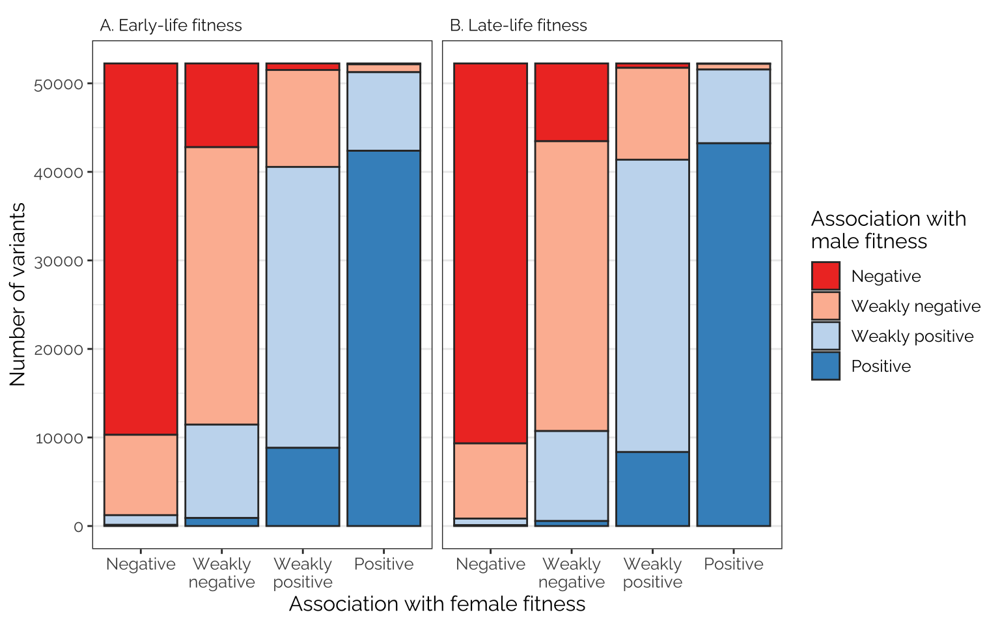
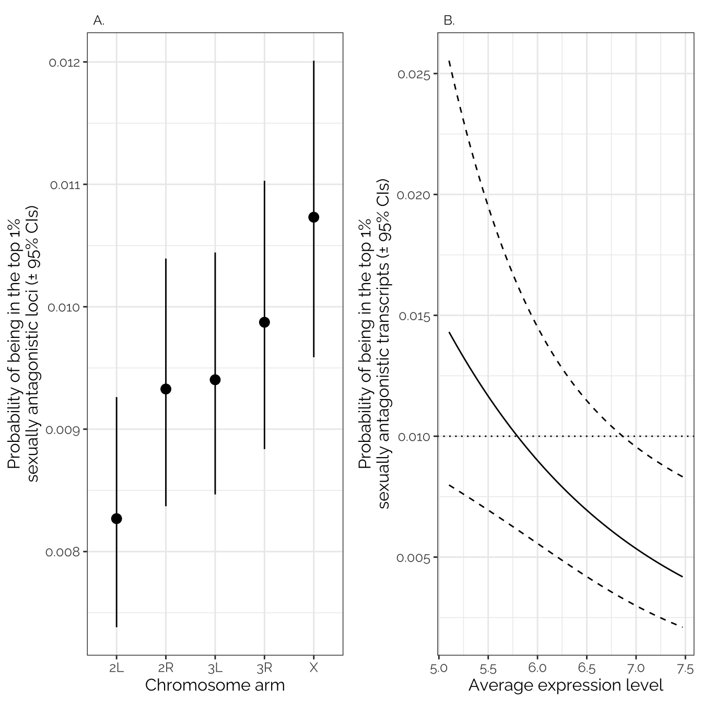

Plots and models of variant effect sizes
Last updated: 2023-03-21
Checks: 7 0
Knit directory: fitnessGWAS/
This reproducible R Markdown analysis was created with workflowr (version 1.7.0.4). The Checks tab describes the reproducibility checks that were applied when the results were created. The Past versions tab lists the development history.
Great! Since the R Markdown file has been committed to the Git repository, you know the exact version of the code that produced these results.
Great job! The global environment was empty. Objects defined in the global environment can affect the analysis in your R Markdown file in unknown ways. For reproduciblity it’s best to always run the code in an empty environment.
The command set.seed(20180914) was run prior to running
the code in the R Markdown file. Setting a seed ensures that any results
that rely on randomness, e.g. subsampling or permutations, are
reproducible.
Great job! Recording the operating system, R version, and package versions is critical for reproducibility.
Nice! There were no cached chunks for this analysis, so you can be confident that you successfully produced the results during this run.
Great job! Using relative paths to the files within your workflowr project makes it easier to run your code on other machines.
Great! You are using Git for version control. Tracking code development and connecting the code version to the results is critical for reproducibility.
The results in this page were generated with repository version de68e73. See the Past versions tab to see a history of the changes made to the R Markdown and HTML files.
Note that you need to be careful to ensure that all relevant files for
the analysis have been committed to Git prior to generating the results
(you can use wflow_publish or
wflow_git_commit). workflowr only checks the R Markdown
file, but you know if there are other scripts or data files that it
depends on. Below is the status of the Git repository when the results
were generated:
Ignored files:
Ignored: .DS_Store
Ignored: .Rapp.history
Ignored: .Rhistory
Ignored: .Rproj.user/
Ignored: .httr-oauth
Ignored: .pversion
Ignored: analysis/.DS_Store
Ignored: code/.DS_Store
Ignored: code/Drosophila_GWAS.Rmd
Ignored: data/.DS_Store
Ignored: data/derived/
Ignored: data/input/.DS_Store
Ignored: data/input/.pversion
Ignored: data/input/dgrp.fb557.annot.txt
Ignored: data/input/dgrp2.bed
Ignored: data/input/dgrp2.bim
Ignored: data/input/dgrp2.fam
Ignored: data/input/huang_transcriptome/
Ignored: figures/.DS_Store
Ignored: old_analyses/.DS_Store
Untracked files:
Untracked: old_analyses/Data for old analyses/
Untracked: old_analyses/eQTL_analysis.Rmd
Untracked: old_analyses/fitness_data.csv
Untracked: old_analyses/gcta_quant_genetics_OLD.Rmd
Untracked: old_analyses/quantitative_genetics_OLD_brms.Rmd
Note that any generated files, e.g. HTML, png, CSS, etc., are not included in this status report because it is ok for generated content to have uncommitted changes.
These are the previous versions of the repository in which changes were
made to the R Markdown
(analysis/plot_models_variant_effects.Rmd) and HTML
(docs/plot_models_variant_effects.html) files. If you’ve
configured a remote Git repository (see ?wflow_git_remote),
click on the hyperlinks in the table below to view the files as they
were in that past version.
| File | Version | Author | Date | Message |
|---|---|---|---|---|
| Rmd | 358afb4 | lukeholman | 2023-03-21 | Tidying up and small edits |
| html | 14a2316 | lukeholman | 2023-03-20 | Build site. |
| Rmd | 9f76cf2 | lukeholman | 2023-03-20 | wflow_publish("analysis/plot_models_variant_effects.Rmd") |
| html | c63ff62 | lukeholman | 2023-03-15 | Build site. |
| Rmd | c211917 | lukeholman | 2023-03-15 | wflow_publish("analysis/plot_models_variant_effects.Rmd") |
| Rmd | d94e22d | lukeholman | 2023-03-14 | New quant gen and other changes |
| html | 23341aa | lukeholman | 2022-07-29 | Build site. |
| Rmd | 0f05904 | lukeholman | 2022-07-29 | wflow_publish("analysis/plot_models_variant_effects.Rmd") |
| html | 5593371 | lukeholman | 2022-07-29 | Build site. |
| Rmd | 70671b4 | lukeholman | 2022-07-29 | wflow_publish("analysis/plot_models_variant_effects.Rmd") |
| html | 45e139c | lukeholman | 2022-07-29 | Build site. |
| Rmd | 5cf7b5e | lukeholman | 2022-07-29 | wflow_publish("analysis/plot_models_variant_effects.Rmd") |
| html | 490266c | lukeholman | 2022-03-10 | Build site. |
| Rmd | ffbefdd | lukeholman | 2022-03-10 | wflow_publish("analysis/plot_models_variant_effects.Rmd") |
| html | e4f2f4f | lukeholman | 2022-02-23 | Build site. |
| Rmd | 17a62a7 | lukeholman | 2022-02-23 | wflow_publish("analysis/plot_models_variant_effects.Rmd") |
| html | 1bb603c | lukeholman | 2022-02-23 | Build site. |
| Rmd | 86444b2 | lukeholman | 2022-02-23 | wflow_publish("analysis/plot_models_variant_effects.Rmd") |
| html | 58de93a | lukeholman | 2022-02-23 | Build site. |
| Rmd | d573064 | lukeholman | 2022-02-23 | wflow_publish("analysis/plot_models_variant_effects.Rmd") |
| html | 6521063 | lukeholman | 2022-02-22 | Build site. |
| Rmd | 9deec2d | lukeholman | 2022-02-22 | wflow_publish("analysis/plot_models_variant_effects.Rmd") |
| html | 5a59d9f | lukeholman | 2021-11-12 | Build site. |
| Rmd | de68149 | lukeholman | 2021-11-12 | wflow_publish("analysis/plot_models_variant_effects.Rmd") |
| html | 7449a90 | lukeholman | 2021-10-01 | Build site. |
| html | 4953d58 | lukeholman | 2021-09-26 | Build site. |
| Rmd | 2bf8750 | lukeholman | 2021-09-26 | Commit Sept 2021 |
| html | 8d14298 | lukeholman | 2021-09-26 | Build site. |
| Rmd | af15dd6 | lukeholman | 2021-09-26 | Commit Sept 2021 |
| html | 871ae81 | lukeholman | 2021-03-04 | Build site. |
| html | e112260 | lukeholman | 2021-03-04 | Build site. |
| Rmd | c606d3d | lukeholman | 2021-03-04 | big first commit 2021 |
library(tidyverse)
library(gridExtra)
library(qqman)
library(ggbeeswarm)
library(Hmisc)
library(showtext) # For fancy Google font in figures
library(mashr)
library(kableExtra)
library(cowplot)
library(grid)
library(RColorBrewer)
library(car)
library(brms)
library(tidybayes)
library(bigsnpr)
library(glue)
library(patchwork)
library(ggpubr)
library(staplr)
# Note: you may need to re-download plink to get this to run on non-Mac systems
# I used bigsnpr::download_plink()
plink <- paste(getwd(), "code/plink", sep = "/")
font_add_google(name = "Raleway", family = "Raleway", regular.wt = 400, bold.wt = 700) # Install font from Google Fonts
showtext_auto()
db <- DBI::dbConnect(RSQLite::SQLite(),
"data/derived/annotations.sqlite3")
# Results for all 1,613,615 SNPs, even those that are in 100% LD with others (these are grouped up by the SNP_clump column)
all_snps <- tbl(db, "univariate_lmm_results")
# All SNPs and SNP groups that are in <100% LD with one another (n = 1,207,357)
SNP_clumps <- all_snps %>% select(-SNP) %>% distinct() %>% collect(n = Inf)
# Subsetting variable to get the approx-LD subset of SNPs
LD_subset <- !is.na(SNP_clumps$LFSR_female_early_mashr_ED)
# Load the predicted line means, as calculated by get_predicted_line_means
predicted_line_means <- read_csv("data/derived/predicted_line_means.csv")
# Load and clean the effect sizes from GWAS and join with SNP annotations
univariate_lmm_results <- tbl(db, "univariate_lmm_results") %>%
select(-contains("canonical"),
-contains("raw")) %>%
inner_join(tbl(db, "variants") %>%
select(SNP, FBID, site.class, distance.to.gene, MAF),
by = "SNP") %>%
left_join(
tbl(db, "genes") %>%
select(FBID, gene_name), by = "FBID") %>%
collect(n = Inf) %>%
rename_all(~ gsub("beta_", "", .x)) %>%
rename_all(~ gsub("_mashr_ED", "", .x))
univariate_lmm_results <- univariate_lmm_results %>%
mutate(site.class = gsub("5_", "5-", site.class),
site.class = gsub("3_", "3-", site.class),
site.class = gsub("NON_", "NON-", site.class),
site.class = gsub("_", " ", site.class),
site.class = capitalize(tolower(site.class)),
site.class = gsub("Utr", "UTR", site.class)
)Q-Q plots
Here are some quantile-quantile plots, which are commonly used to check GWAS results, and to test the hypothesis that there are more SNPs than expected showing large effects on the trait of interest. There is a modest excess of loci with effects on female fitness, but not much of a visible excess for males. These plots use the raw \(p\)-values results from GEMMA.
Female early-life fitness
univariate_lmm_pvals <- SNP_clumps %>%
select(contains("pvalue")) %>% filter(LD_subset) %>% as.data.frame()
qqman::qq(univariate_lmm_pvals$pvalue_female_early_raw)
Female late-life fitness
qqman::qq(univariate_lmm_pvals$pvalue_female_late_raw)
Male early-life fitness
qqman::qq(univariate_lmm_pvals$pvalue_male_early_raw)

Hex bin plots and correlations in variant effect sizes
Effect sizes adjusted using ‘data-driven’ adaptive
shrinkage in mashr
Plot
snp_effect_fig <- bind_rows(
SNP_clumps %>%
filter(LD_subset) %>% # ensure only the LD SNPs from mashr are plotted
select(female = beta_female_early_mashr_ED, male = beta_male_early_mashr_ED) %>%
mutate(age_class = "A. Early-life fitness"),
SNP_clumps %>%
filter(LD_subset) %>% # ensure only the LD SNPs from mashr are plotted
select(female = beta_female_late_mashr_ED, male = beta_male_late_mashr_ED) %>%
mutate(age_class = "B. Late-life fitness")) %>%
ggplot(aes(female, male)) +
geom_vline(xintercept = 0, linetype = 3) +
geom_hline(yintercept = 0, linetype = 3) +
stat_binhex(bins = 50) +
geom_density_2d(colour = "white", alpha = 0.6) +
scale_fill_viridis_c() +
facet_wrap(~ age_class) +
theme_bw() + xlab("Effect on female fitness") + ylab("Effect on male fitness") +
theme(legend.position = "none",
strip.background = element_blank(),
strip.text = element_text(hjust=0)) +
theme(text = element_text(family = "Raleway", size = 12))
fig2_top <- snp_effect_fig
snp_effect_fig
Top part of Figure 2: mashr-adjusted
effect sizes of 1207357 loci (i.e. groups of one or more polymorphic
sites in complete linkage disequilibrium) on male and female early- and
late-life fitness. The data have been binned into hexagons, with the
colour and contour lines indicating the number of loci. The diagonal
line represents \(y=x\). Positive
effect sizes indicate that the minor allele is associated with higher
fitness, while negative effects indicate that the major allele is
associated with higher fitness.
Pearson correlation matrix
SNP_clumps %>%
select(contains("mashr_ED")) %>%
select(contains("beta")) %>%
rename_all(~ paste(ifelse(str_detect(.x, "female"), "Female", "Male"),
ifelse(str_detect(.x, "early"), "early", "late"))) %>%
cor(use = "pairwise.complete.obs") %>%
kable(digits = 3) %>% kable_styling(full_width = FALSE)| Female early | Female late | Male early | Male late | |
|---|---|---|---|---|
| Female early | 1.000 | 0.998 | 0.911 | 0.950 |
| Female late | 0.998 | 1.000 | 0.880 | 0.927 |
| Male early | 0.911 | 0.880 | 1.000 | 0.994 |
| Male late | 0.950 | 0.927 | 0.994 | 1.000 |
Unadjusted effect sizes
Plot
Uses the variant effect sizes output by GEMMA, without applying any
shrinkage (i.e. this is the input data that was adjusted using
mashr).
bind_rows(
SNP_clumps %>%
filter(LD_subset) %>% # ensure only the LD SNPs from mashr are plotted
select(female = beta_female_early_raw, male = beta_male_early_raw) %>%
mutate(age_class = "A. Early-life fitness"),
SNP_clumps %>%
filter(LD_subset) %>% # ensure only the LD SNPs from mashr are plotted
select(female = beta_female_late_raw, male = beta_male_late_raw) %>%
mutate(age_class = "B. Late-life fitness")) %>%
ggplot(aes(female, male)) +
geom_vline(xintercept = 0, linetype = 3) +
geom_hline(yintercept = 0, linetype = 3) +
stat_binhex(bins = 50) +
geom_density_2d(colour = "white", alpha = 0.6) +
scale_fill_viridis_c() +
facet_wrap(~ age_class) +
theme_bw() + xlab("Effect on female fitness") + ylab("Effect on male fitness") +
theme(legend.position = "none",
strip.background = element_blank(),
strip.text = element_text(hjust=0)) +
theme(text = element_text(family = "Raleway", size = 12))
Pearson correlation matrix
SNP_clumps %>%
select(contains("raw")) %>%
select(contains("beta")) %>%
rename_all(~ paste(ifelse(str_detect(.x, "female"), "Female", "Male"),
ifelse(str_detect(.x, "early"), "early", "late"))) %>%
cor(use = "pairwise.complete.obs") %>%
kable(digits = 3) %>% kable_styling(full_width = FALSE)| Female early | Female late | Male early | Male late | |
|---|---|---|---|---|
| Female early | 1.000 | 0.567 | 0.220 | 0.118 |
| Female late | 0.567 | 1.000 | 0.215 | 0.167 |
| Male early | 0.220 | 0.215 | 1.000 | 0.434 |
| Male late | 0.118 | 0.167 | 0.434 | 1.000 |
Average effect sizes are negative
Each of the following four tests is an intercept-only linear model, weighted by the inverse of the standard error for the focal variant’s effect size (so, loci where the effect effect size was measured with more precision are weighted more heavily). The tests are run on the LD-pruned subset of SNPs, minimising pseudoreplication caused by non-independence in the data. An intercept term less than zero indicates that on average, the minor allele tends to be associated with lower values of the focal fitness trait (compared to the major allele).
These results indicate that the minor allele tends to reduce fitness, relative to the major allele. It’s a weak effect (note the small value in the Estimate column), this may reflect the large uncertainty with which the effect sizes are measured, in addition to a true biological result that most loci have little or no relationship with the fitness traits we measured.
Female early-life
mod1 <- summary(lm(beta_female_early_raw ~ 1,
data = SNP_clumps %>% filter(LD_subset),
weights = 1 / SE_female_early_raw))
mod1
Call:
lm(formula = beta_female_early_raw ~ 1, data = SNP_clumps %>%
filter(LD_subset), weights = 1/SE_female_early_raw)
Weighted Residuals:
Min 1Q Median 3Q Max
-1.98458 -0.22630 0.00919 0.23696 1.48781
Coefficients:
Estimate Std. Error t value Pr(>|t|)
(Intercept) -0.0016820 0.0002555 -6.584 4.58e-11 ***
---
Signif. codes: 0 '***' 0.001 '**' 0.01 '*' 0.05 '.' 0.1 ' ' 1
Residual standard error: 0.3497 on 208986 degrees of freedomFemale late-life
mod2 <- summary(lm(beta_female_late_raw ~ 1,
data = SNP_clumps %>% filter(LD_subset),
weights = 1 / SE_female_late_raw))
mod2
Call:
lm(formula = beta_female_late_raw ~ 1, data = SNP_clumps %>%
filter(LD_subset), weights = 1/SE_female_late_raw)
Weighted Residuals:
Min 1Q Median 3Q Max
-1.94128 -0.23405 0.00409 0.23909 1.47335
Coefficients:
Estimate Std. Error t value Pr(>|t|)
(Intercept) -0.0025016 0.0002598 -9.63 <2e-16 ***
---
Signif. codes: 0 '***' 0.001 '**' 0.01 '*' 0.05 '.' 0.1 ' ' 1
Residual standard error: 0.3549 on 208986 degrees of freedomMale early-life
mod3 <- summary(lm(beta_male_early_raw ~ 1,
data = SNP_clumps %>% filter(LD_subset),
weights = 1 / SE_male_early_raw))
mod3
Call:
lm(formula = beta_male_early_raw ~ 1, data = SNP_clumps %>% filter(LD_subset),
weights = 1/SE_male_early_raw)
Weighted Residuals:
Min 1Q Median 3Q Max
-1.58868 -0.23295 -0.00219 0.23114 1.76956
Coefficients:
Estimate Std. Error t value Pr(>|t|)
(Intercept) -0.0016140 0.0002542 -6.35 2.15e-10 ***
---
Signif. codes: 0 '***' 0.001 '**' 0.01 '*' 0.05 '.' 0.1 ' ' 1
Residual standard error: 0.3503 on 208986 degrees of freedomMale late-life
mod4 <- summary(lm(beta_male_late_raw ~ 1,
data = SNP_clumps %>% filter(LD_subset),
weights = 1 / SE_male_late_raw))
mod4
Call:
lm(formula = beta_male_late_raw ~ 1, data = SNP_clumps %>% filter(LD_subset),
weights = 1/SE_male_late_raw)
Weighted Residuals:
Min 1Q Median 3Q Max
-1.89125 -0.22874 0.00114 0.23182 1.59205
Coefficients:
Estimate Std. Error t value Pr(>|t|)
(Intercept) -0.001943 0.000251 -7.739 1e-14 ***
---
Signif. codes: 0 '***' 0.001 '**' 0.01 '*' 0.05 '.' 0.1 ' ' 1
Residual standard error: 0.3479 on 208986 degrees of freedommedians <- SNP_clumps %>% filter(LD_subset) %>%
summarise(beta_female_early_raw = mean(beta_female_early_raw),
beta_female_late_raw = mean(beta_female_late_raw),
beta_male_early_raw = mean(beta_male_early_raw),
beta_male_late_raw = mean(beta_male_late_raw)) %>%
unlist() %>% unname()
rbind(mod1$coefficients,
mod2$coefficients,
mod3$coefficients,
mod4$coefficients) %>% as_tibble() %>%
mutate(`Fitness component` =
c("Female fitness early", "Female fitness late",
"Male fitness early", "Male fitness late"),
.before = names(.)[1]) %>%
mutate(Estimate = paste(format(round(Estimate, 5), nsmall = 5),
" (", format(round(`Std. Error`, 5), nsmall = 5), ")", sep = "")) %>%
mutate(`Median variant effect` = format(round(medians, 5), nsmall = 5), .after = "Estimate") %>%
rename(p = `Pr(>|t|)`, `Mean (SE) variant effect` = Estimate) %>%
mutate(p = formatC(p, format = "e", digits = 2)) %>%
select(-`Std. Error`) %>%
saveRDS("data/derived/supp_table_of_variant_effect_means.rds")Manhattan plot
Figure legend: Manhattan plot showing the p-values (-log_{10} transformed) for each variant, from mixed model GWAS of female (top) and male (bottom) early-life fitness testing the null hypothesis that the two alleles are associated with equal fitness values.
manhattan_data <- tbl(db, "univariate_lmm_results") %>%
select(SNP, starts_with("P_"),
pvalue_female_early_raw, pvalue_male_early_raw) %>%
distinct() %>%
collect(n=Inf) %>%
mutate(position = str_split(SNP, "_"),
chr = map_chr(position, ~ .x[1]),
position = as.numeric(map_chr(position, ~ .x[2]))) %>%
filter(chr != "4")
max_pos <- manhattan_data %>%
group_by(chr) %>%
summarise(max_pos = max(position), .groups = "drop") %>%
as.data.frame()
max_pos$max_pos <- c(0, cumsum(max_pos$max_pos[1:4]))
manhattan_data <- manhattan_data %>%
left_join(max_pos, by = "chr") %>%
mutate(position = position + max_pos)
# left_axis_label <- expression(paste("Effect on female early-life fitness (-", Log[10], " p)"))
p1 <- manhattan_data %>%
ggplot(aes(position, -1 * log10(pvalue_female_early_raw),
group = chr, colour = chr, stroke = 0.2)) +
geom_point(size = 0.5) +
scale_colour_brewer(palette = "Paired", name = "Chromosome") +
scale_y_continuous(limits = c(0,8)) +
ylab("") + xlab("") +
theme_bw() +
theme(axis.text.x = element_blank(),
text = element_text(family = "Raleway", size = 12),
panel.border = element_blank(),
axis.ticks.x = element_blank())
p2 <- manhattan_data %>%
ggplot(aes(position, -1 * log10(pvalue_male_early_raw),
group = chr, colour = chr, stroke = 0.2)) +
geom_point(size = 0.5) +
scale_colour_brewer(palette = "Paired", name = "Chromosome") +
xlab("Position") + ylab("") +
scale_y_reverse(limits = c(8,0)) +
theme_bw() +
theme(axis.text.x = element_blank(),
text = element_text(family = "Raleway", size = 12),
panel.border = element_blank(),
axis.ticks.x = element_blank())
grid_arrange_shared_legend <- function(..., ncol = length(list(...)), nrow = 1) {
plots <- list(...)
g <- ggplotGrob(plots[[1]] + theme(legend.position = "right"))$grobs
legend <- g[[which(sapply(g, function(x) x$name) == "guide-box")]]
lheight <- sum(legend$height)
lwidth <- sum(legend$width)
gl <- lapply(plots, function(x) x + theme(legend.position = "none"))
gl <- c(gl, ncol = ncol, nrow = nrow)
left_label <- text_grob(expression(Effect~on~early-life~fitness~(-Log[10]~p)),
size = 12, family = "Raleway", rot = 90)
combined <- arrangeGrob(
arrangeGrob(gl[[1]], gl[[2]], nrow = 2,
left = left_label),
legend,
ncol = 2,
widths = unit.c(unit(1, "npc") - lwidth, lwidth))
return(combined)
}
grid_arrange_shared_legend(p1, p2)TableGrob (1 x 2) "arrange": 2 grobs
z cells name grob
1 1 (1-1,1-1) arrange gtable[arrange]
2 2 (1-1,2-2) arrange gtable[guide-box]Investigating pleiotropy and polygenicity of fitness
Inspired by Boyle et al. 2017 (Cell, specifically the analysis in their Figure 1C), we sorted all the variants in order of effect size on female fitness, placed the variants in bins of 1000, and then calculated the average effect size for each bin for both male and female fitness. This analysis was performed on the raw SNP effect sizes from GEMMA, pruned to a set of 208987 SNPs in approximate LD with one another.
If there is pleiotropy between male and female fitness, we predict a correlation between the effect sizes for male and female fitness; on the contrary if there were no pleiotropy, we would see no correlation. Moreover, if fitness is highly polygenic (‘omnigenic’; Boyle et al. 2017), we predict a tight, straight line relationship, because each bin would contain some variants with small but genuine associations with fitness, and these effects would replicate in the other fitness trait. On the contrary, if genetic variance in fitness stems from just a few genes with larger effects (with most loci having no true effect on fitness), the relationship between male and female fitness would be flat in the center and sloped at the extremes.
Figure 3 shows that there was a very tight correlation between the average effects of the variants in each bin on male and female fitness. The data therefore suggest that variants associated with male fitness tend to also affect female fitness (in the same direction), and that a very large number of loci have small, concordant effects on fitness in both sexes.
Interestingly there appears to be a curve in Figure 3A to the left of the x-axis, indicating that variants where the minor allele is strongly, negatively associated with female fitness are (on average) less negatively associated with male fitness than expected based on predictions from variants with weaker effects on female fitness. One possible explanation is that alleles that are highly highly detrimental to both sexes are usually purged by selection (or at least kept below the 5% MAF threshold that we used), whereas female-harming alleles that are neutral or beneficial in males are purged less often, resulting a greater proportion of female-limited or sexually antagonistic alleles towards the left of the x-axis.
p1_data <- SNP_clumps %>%
filter(LD_subset) %>% # The figure looks the same whether or not the data are thinned to the LD set of SNPs
arrange(beta_female_early_raw) %>%
mutate(bin = c(rep(1:floor(n()/1000), each = 1000),
rep(floor(n()/1000) + 1, each = n() %% 1000)),
facet = "A. Early-life fitness") %>%
group_by(bin, facet) %>%
summarise(females = mean(beta_female_early_raw), males = mean(beta_male_early_raw))
p2_data <- SNP_clumps %>%
filter(LD_subset) %>%
arrange(beta_female_late_raw) %>%
mutate(bin = c(rep(1:floor(n()/1000), each = 1000),
rep(floor(n()/1000) + 1, each = n() %% 1000)),
facet = "B. Late-life fitness") %>%
group_by(bin, facet) %>%
summarise(females = mean(beta_female_late_raw), males = mean(beta_male_late_raw))
boyle_plot <- bind_rows(p1_data, p2_data) %>%
ggplot(aes(females, males)) +
geom_hline(yintercept = 0, linetype = 2) +
geom_vline(xintercept = 0, linetype = 2) +
geom_point(alpha = 0.8) +
stat_smooth(method = "lm", formula = y ~ x + I(x^2), size = 0.6) +
facet_wrap(~ facet) +
xlab("Mean effect size on female fitness") + ylab("Mean effect size on male fitness") +
theme_bw() +
theme(strip.background = element_blank(),
strip.text = element_text(hjust=0)) +
theme(text = element_text(family = "Raleway", size = 12))
boyle_plot
quartz_off_screen
2 Correlations between mutation load and fitness
Count all the mutations in each DGRP line
The following code counts the number of mutations per DGRP line which
A) have a minor allele frequency of 0.05 or lower, and B) were
classified by SnpEff as having an effect that we designated to be a
“major effect”, defined as an insertion, deletion, or nonsynonymous
substitution inside a coding sequence (as well as gains and losses of
start codons). We reasoned that such alleles are probably mostly
deleterious. The following mutation types were classified as major
effect mutations (see SnpEff’s classification scheme here):
- EXON_DELETED
- NON_SYNONYMOUS_CODING
- FRAME_SHIFT
- CODON_CHANGE
- CODON_INSERTION
- CODON_CHANGE_PLUS_CODON_INSERTION
- CODON_DELETION
- CODON_CHANGE_PLUS_CODON_DELETION
- STOP_GAINED
- STOP_LOST
- RARE_AMINO_ACID
- START_LOST
- START_GAINED
# Load up the DGRP genotype data using the bigsnpr package
if(!file.exists("snp_backing_file.bk")) {
rds <- snp_readBed("data/input/dgrp2.bed", backingfile = "snp_backing_file")
}
bed_file <- snp_attach("snp_backing_file.rds")
annot <- read.table("data/input/dgrp.fb557.annot.txt",
header = FALSE, stringsAsFactors = FALSE)
# Use PLINK to count allele freqs in the whole DGRP
plink <- paste(getwd(), "code/plink", sep = "/")
run_command <- function(shell_command, wd = getwd(), path = ""){
cat(system(glue("cd ", wd, path, "\n",shell_command), intern = TRUE), sep = '\n')
}
run_command("{plink} --bfile dgrp2 --freq", path = "/data/input")PLINK v1.90b6.24 64-bit (6 Jun 2021) www.cog-genomics.org/plink/1.9/
(C) 2005-2021 Shaun Purcell, Christopher Chang GNU General Public License v3
Logging to plink.log.
Options in effect:
--bfile dgrp2
--freq
32768 MB RAM detected; reserving 16384 MB for main workspace.
4438427 variants loaded from .bim file.
205 people (0 males, 205 females) loaded from .fam.
205 phenotype values loaded from .fam.
Using 1 thread (no multithreaded calculations invoked).
Before main variant filters, 205 founders and 0 nonfounders present.
Calculating allele frequencies... 0%1%2%3%4%5%6%7%8%9%10%11%12%13%14%15%16%17%18%19%20%21%22%23%24%25%26%27%28%29%30%31%32%33%34%35%36%37%38%39%40%41%42%43%44%45%46%47%48%49%50%51%52%53%54%55%56%57%58%59%60%61%62%63%64%65%66%67%68%69%70%71%72%73%74%75%76%77%78%79%80%81%82%83%84%85%86%87%88%89%90%91%92%93%94%95%96%97%98%99% done.
Total genotyping rate is 0.956183.
--freq: Allele frequencies (founders only) written to plink.frq .# Get a list of variants that constitute a 'major mutation' (types as shown in code below)
major_effect_types <- c(
"EXON_DELETED", "NON_SYNONYMOUS_CODING",
"FRAME_SHIFT", "CODON_CHANGE",
"CODON_INSERTION",
"CODON_CHANGE_PLUS_CODON_INSERTION",
"CODON_DELETION",
"CODON_CHANGE_PLUS_CODON_DELETION",
"STOP_GAINED",
"STOP_LOST",
"RARE_AMINO_ACID",
"START_LOST",
"START_GAINED"
)
all_major_mutations <- annot$V1[unique(c(
which(str_detect(annot$V3, major_effect_types[1])),
which(str_detect(annot$V3, major_effect_types[2])),
which(str_detect(annot$V3, major_effect_types[3])),
which(str_detect(annot$V3, major_effect_types[4])),
which(str_detect(annot$V3, major_effect_types[5])),
which(str_detect(annot$V3, major_effect_types[6])),
which(str_detect(annot$V3, major_effect_types[7])),
which(str_detect(annot$V3, major_effect_types[8])),
which(str_detect(annot$V3, major_effect_types[9])),
which(str_detect(annot$V3, major_effect_types[10])),
which(str_detect(annot$V3, major_effect_types[11])),
which(str_detect(annot$V3, major_effect_types[12])),
which(str_detect(annot$V3, major_effect_types[13]))
))]
# Get a list of variants with 0 > MAF < 0.05
rare_alleles <- read.table("data/input/plink.frq", header = T) %>%
filter(MAF < 0.05 & MAF > 0) %>% pull(SNP)
# Get the indexes of variants that are major mutations and also have MAF < 0.05
indexes <- intersect(
which(bed_file$map$marker.ID %in% all_major_mutations),
which(bed_file$map$marker.ID %in% rare_alleles)
)
# Function to count the number of mutations in all 205 DGRP lines
count_mutations <- function(indexes){
tibble(
line = bed_file$fam$family.ID,
mutation_load = sapply(
1:205, function(i) sum(bed_file$genotypes[i, ][indexes] == 2, na.rm = T))
)
}
mutation_load <- count_mutations(indexes)
# Join the mutation counts with our line mean fitness data
joined <- left_join(
predicted_line_means %>%
select(-block) %>%
gather(fitness_trait, fitness_value, -line),
mutation_load, by = join_by(line)) %>%
mutate(fitness_trait = str_to_sentence(str_replace_all(fitness_trait, "[.]", " ")))Run Bayesian multivariate models
The following Bayesian multivariate model estiamtes the relationship
between mutation count and each of the four fitness traits, across DGRP
lines. The model has the multivariate formula
(FE, FL, ME, ML) ~ mutation_count, assumes Gaussian errors,
and estimates the residual correlation between the four fitness traits
(thereby accounting for the correlation between fitness traits when
estimating the relationship with mutation count). The model uses
brms default priors.
brms_data_muts <- joined %>%
mutate(fitness_trait = str_replace_all(fitness_trait, " ", "_")) %>%
spread(fitness_trait, fitness_value) %>%
mutate(mutation_count = mutation_load / 100) %>% select(-mutation_load)
mut_model <- brm(bf(
mvbind(Female_fitness_early,
Female_fitness_late,
Male_fitness_early,
Male_fitness_late) ~
mutation_count, sigma ~ 0) + set_rescor(TRUE),
data = brms_data_muts,
warmup = 2000, iter = 8000, chains = 4, cores = 4) Running /Library/Frameworks/R.framework/Resources/bin/R CMD SHLIB foo.c
clang -mmacosx-version-min=10.13 -I"/Library/Frameworks/R.framework/Resources/include" -DNDEBUG -I"/Library/Frameworks/R.framework/Versions/4.2/Resources/library/Rcpp/include/" -I"/Library/Frameworks/R.framework/Versions/4.2/Resources/library/RcppEigen/include/" -I"/Library/Frameworks/R.framework/Versions/4.2/Resources/library/RcppEigen/include/unsupported" -I"/Library/Frameworks/R.framework/Versions/4.2/Resources/library/BH/include" -I"/Library/Frameworks/R.framework/Versions/4.2/Resources/library/StanHeaders/include/src/" -I"/Library/Frameworks/R.framework/Versions/4.2/Resources/library/StanHeaders/include/" -I"/Library/Frameworks/R.framework/Versions/4.2/Resources/library/RcppParallel/include/" -I"/Library/Frameworks/R.framework/Versions/4.2/Resources/library/rstan/include" -DEIGEN_NO_DEBUG -DBOOST_DISABLE_ASSERTS -DBOOST_PENDING_INTEGER_LOG2_HPP -DSTAN_THREADS -DBOOST_NO_AUTO_PTR -include '/Library/Frameworks/R.framework/Versions/4.2/Resources/library/StanHeaders/include/stan/math/prim/mat/fun/Eigen.hpp' -D_REENTRANT -DRCPP_PARALLEL_USE_TBB=1 -I/usr/local/include -fPIC -Wall -g -O2 -c foo.c -o foo.o
In file included from <built-in>:1:
In file included from /Library/Frameworks/R.framework/Versions/4.2/Resources/library/StanHeaders/include/stan/math/prim/mat/fun/Eigen.hpp:13:
In file included from /Library/Frameworks/R.framework/Versions/4.2/Resources/library/RcppEigen/include/Eigen/Dense:1:
In file included from /Library/Frameworks/R.framework/Versions/4.2/Resources/library/RcppEigen/include/Eigen/Core:88:
/Library/Frameworks/R.framework/Versions/4.2/Resources/library/RcppEigen/include/Eigen/src/Core/util/Macros.h:628:1: error: unknown type name 'namespace'
namespace Eigen {
^
/Library/Frameworks/R.framework/Versions/4.2/Resources/library/RcppEigen/include/Eigen/src/Core/util/Macros.h:628:16: error: expected ';' after top level declarator
namespace Eigen {
^
;
In file included from <built-in>:1:
In file included from /Library/Frameworks/R.framework/Versions/4.2/Resources/library/StanHeaders/include/stan/math/prim/mat/fun/Eigen.hpp:13:
In file included from /Library/Frameworks/R.framework/Versions/4.2/Resources/library/RcppEigen/include/Eigen/Dense:1:
/Library/Frameworks/R.framework/Versions/4.2/Resources/library/RcppEigen/include/Eigen/Core:96:10: fatal error: 'complex' file not found
#include <complex>
^~~~~~~~~
3 errors generated.
make: *** [foo.o] Error 1Model checks (posterior predictive plots)
Here, we plot the distribution of the model’s posterior predictions,
for each of the four response variables, for 50 samples from the
posterior. If the model’s assumptions and prior are suitable, there
should be a good match between the posterior predictions (shown in blue;
one line per sample from the posterior) and the original data (shown in
black). See ?pp_check.
do_ppcheck <- function(rr, title){
pp_check(mut_model, resp = rr, ndraws = 50) +
scale_y_continuous(limits = c(0, 0.55)) +
labs(subtitle=title) +
theme_bw() +
theme(legend.position = "none")
}
grid.arrange(
do_ppcheck("Femalefitnessearly", "Female fitness early"),
do_ppcheck("Femalefitnesslate", "Female fitness late"),
do_ppcheck("Malefitnessearly", "Male fitness early"),
do_ppcheck("Malefitnesslate", "Male fitness late"))
Plot mutation load against line mean fitness
The plot shows the correlation, across DGRP lines of fitness with the mutation load. The top row shows the effect of ‘major effect’ mutations on each of the four fitness traits, while the bottom row shows the effect of mutations with a minor allele frequency (MAF) below 5%. The number of mutations of the specified type (in 100s) is shown on the x-axis, and the regression line comes from the previously mentioned Bayesian multivariate model (which accounts for covariance between the four fitness traits when estimating the effects of mutation load).
The figure illustrates that there is large variation in the number of putatively deleterious mutations between lines, and there is a negative correlation with fitness (especially in females).
mut_plot_data <- conditional_effects(mut_model, plot = F)
get_regression_line_data <- function(plot_data){
regression_line_rare_muts <- bind_rows(
plot_data[[1]] %>%
select(mutation_count, estimate__, lower__, upper__) %>%
mutate(trait = "A. Female early-life fitness"),
plot_data[[2]] %>%
select(mutation_count, estimate__, lower__, upper__) %>%
mutate(trait = "B. Female late-life fitness"),
plot_data[[3]] %>%
select(mutation_count, estimate__, lower__, upper__) %>%
mutate(trait = "C. Male early-life fitness"),
plot_data[[4]] %>%
select(mutation_count, estimate__, lower__, upper__) %>%
mutate(trait = "D. Male late-life fitness")) %>%
mutate(mut_type = "Load of mutations with MAF < 0.05") %>%
as_tibble()
}
get_points_data <- function(brms_data){
brms_data %>% select(-line) %>%
rename(`A. Female early-life fitness` = Female_fitness_early,
`B. Female late-life fitness` = Female_fitness_late,
`C. Male early-life fitness` = Male_fitness_early,
`D. Male late-life fitness` = Male_fitness_late) %>%
gather(trait, estimate__, -mutation_count)
}
mut_load_correlation_plot <- get_regression_line_data(mut_plot_data) %>%
ggplot(aes(x = mutation_count, y = estimate__)) +
geom_ribbon(aes(ymin = lower__, ymax = upper__, linetype = NA, fill = trait)) +
geom_line(lwd = 0.5) +
geom_point(data = get_points_data(brms_data_muts), alpha = 0.7, size = 0.7) +
labs(x = "Mutation load (100s)",
y = "Line mean fitness") +
facet_wrap(~trait, nrow = 2) +
scale_fill_manual(values = c("pink", "deeppink2", "lightblue", "steelblue")) +
theme_bw() +
theme(text = element_text(family = "Raleway", size = 11)) +
theme(plot.title = element_text(hjust = 0),
strip.text = element_text(hjust = 0),
strip.background = element_blank(),
legend.position = "none")
mut_load_correlation_plot
Estimated effect size of mutation load on fitness
Plot
The left plot shows the posterior estimates of the effect size of mutation load on fitness (i.e. the ‘regression slope’ from the previous figure). The coloured area shows the posterior distribution, and the horizontal bar summarises its median and 66% and 95% credible intervals. The right plot shows the difference in this effect size between fitness traits, e.g. FE - FL shows the difference in regression slope between female early-life and late-life fitness. A positive sign indicates that mutation load has more negative effect on the second trait (e.g. mutations appear more costly to older females than younger).
posterior_muts <- as_draws_df(mut_model, variable = "^b_", regex = T) %>%
as_tibble() %>% select(contains("mutation"))
make_plot1 <- function(posterior, title){
tibble(
`Female\nearly-life\n(FE)` = unlist(posterior[,1]),
`Female\nlate-life\n(FL)` = unlist(posterior[,2]),
`Male\nearly-life\n(ME)` = unlist(posterior[,3]),
`Male\nlate-life\n(ML)` = unlist(posterior[,4])) %>%
gather() %>%
mutate(key = factor(key, rev(unique(key))),
x = title) %>%
ggplot(aes(value, key)) +
geom_vline(xintercept = 0, linetype = 2) +
stat_halfeye(aes(fill = key)) +
facet_wrap(~ x) +
labs(x = "Change per 100 mutations", y = NULL) +
scale_fill_manual(values = rev(c("pink", "deeppink2", "lightblue", "steelblue"))) +
theme_bw() +
theme(text = element_text(family = "Raleway", size = 11)) +
theme(plot.title = element_text(hjust = 0),
strip.text = element_text(hjust = 0),
strip.background = element_blank(),
panel.background = element_blank(),
legend.position = "none")
}
make_plot2 <- function(posterior, title, col){
tibble(
`ME − FE` = unlist(posterior[,3] - posterior[,1]),
`ML − FE` = unlist(posterior[,4] - posterior[,1]),
`ME − FL` = unlist(posterior[,3] - posterior[,2]),
`ML − FL` = unlist(posterior[,4] - posterior[,2]),
`FE − FL` = unlist(posterior[,1] - posterior[,2]),
`ME − ML` = unlist(posterior[,3] - posterior[,4]) ) %>%
gather() %>%
mutate(key = factor(key, rev(c("FE − FL", "ME − ML",
"ME − FE", "ML − FE",
"ME − FL", "ML − FL"))),
x = title) %>%
ggplot(aes(value, key)) +
geom_vline(xintercept = 0, linetype = 2) +
stat_halfeye(fill = col) + labs(x = "Effect size difference", y = NULL) +
facet_wrap(~ x) +
theme_bw() +
theme(text = element_text(family = "Raleway", size = 11)) +
theme(plot.title = element_text(hjust = 0),
strip.text = element_text(hjust = 0),
panel.background = element_blank(),
strip.background = element_blank())
}
pp1 <- make_plot1(posterior_muts, "E. Effect sizes (posterior)")
pp2 <- make_plot2(posterior_muts, "F. Differences in effect size", col = "#F5CA7B")
plot_grid(mut_load_correlation_plot,
arrangeGrob(pp1, pp2, ncol=2), rel_widths = c(1,1.1))
mut_load_correlation_plot + pp1 + pp2 +
plot_layout(ncol = 3, widths = c(1, 0.5,0.5))
pdf("figures/fig4_mutation_load.pdf", height = 4.7, width = 9.55)
mut_load_correlation_plot + pp1 + pp2 +
plot_layout(ncol = 3, widths = c(1, 0.5,0.5))
dev.off()quartz_off_screen
2 # Clean up files:
unlink(list("snp_backing_file.rds",
"snp_backing_file.bk",
"data/input/plink.log",
"data/input/plink.frq"))Table
make_posterior_table <- function(posterior){
as_tibble(rbind(
posterior_summary(posterior[,1]),
posterior_summary(posterior[,2]),
posterior_summary(posterior[,3]),
posterior_summary(posterior[,4]),
posterior_summary(posterior[,1] - posterior[,2]),
posterior_summary(posterior[,3] - posterior[,4]),
posterior_summary(posterior[,3] - posterior[,1]),
posterior_summary(posterior[,4] - posterior[,1]),
posterior_summary(posterior[,3] - posterior[,2]),
posterior_summary(posterior[,4] - posterior[,2]))) %>%
mutate(`Effect size or effect size difference` = c(
"Female early-life (FE)", "Female late-life (FL)",
"Male late-life (ME)", "Male late-life (ML)",
"FE - FL", "ME - ML",
"ME - FE", "ML - FE",
"ME - FL", "ML - FL"), .before = 1) %>%
rename("Error" = `Est.Error`,
`Lower 95% CI` = Q2.5,
`Upper 95% CI` = Q97.5,)
}
saveRDS(make_posterior_table(posterior_muts),
"data/derived/supp_table_mutation_load_effects.rds")
make_posterior_table(posterior_muts) %>%
kable(digits = 3) %>%
kable_styling(full_width = F)| Effect size or effect size difference | Estimate | Error | Lower 95% CI | Upper 95% CI |
|---|---|---|---|---|
| Female early-life (FE) | -0.032 | 0.022 | -0.075 | 0.011 |
| Female late-life (FL) | -0.054 | 0.022 | -0.097 | -0.011 |
| Male late-life (ME) | -0.024 | 0.022 | -0.066 | 0.019 |
| Male late-life (ML) | -0.040 | 0.022 | -0.083 | 0.002 |
| FE - FL | 0.022 | 0.015 | -0.009 | 0.052 |
| ME - ML | 0.017 | 0.012 | -0.006 | 0.040 |
| ME - FE | 0.008 | 0.028 | -0.046 | 0.063 |
| ML - FE | -0.008 | 0.029 | -0.065 | 0.049 |
| ME - FL | 0.030 | 0.026 | -0.021 | 0.082 |
| ML - FL | 0.013 | 0.027 | -0.039 | 0.066 |
Frequencies of antagonistic loci and transcripts
The following figures show the proportions of loci/transcripts whose effect on female fitness (or early-life fitness) is similar or different to their effect on male fitness (or late-life fitness). The figures were made by first placing variant or transcript effect sizes (for female or early-life fitness) into quartiles, which we label as negative effects, weak negative effects, weak positive effects, and positive effects (taking advantage of the fact that the median effect size is very close to zero). We then do the same for male or late-life fitness, and plot the number of transcripts showing each combination of quartiles, giving an indication of how many loci/transcripts have aligned or opposing effects on the different fitness metrics.
The following plots were made after processing the effect sizes with
mashr, which should reduce the number of false signals.
Because there is a positive correlation between the sexes and age
classes, the shrinkage applied by mashr reduces the number
of loci/transcripts that appear to show antagonism between ages and
sexes (this should control the number of ‘false positive’ antagonistic
loci/transcripts).
Frequencies of antagonistic loci
Comparing effects on the sexes
Rather few loci are in the 1st quartile in their effect on male fitness and the 4th quartile for their effect on female fitness, or vice versa, suggesting that variants with strongly sex-opposite effects on fitness are rare
Figure
SNP_effects <- SNP_clumps %>%
filter(LD_subset) %>%
select(contains("beta")) %>%
select(contains("ED")) # this can be changed to "raw" to see the non-mashr effect sizes (i.e. statistical noise)
names(SNP_effects)[grepl("female_early", names(SNP_effects))] <- "FE"
names(SNP_effects)[grepl("female_late", names(SNP_effects))] <- "FL"
names(SNP_effects)[grepl("male_early", names(SNP_effects))] <- "ME"
names(SNP_effects)[grepl("male_late", names(SNP_effects))] <- "ML"
temp <- SNP_effects %>%
mutate(quartile_FE = ntile(FE, 4),
quartile_ME = ntile(ME, 4),
quartile_FL = ntile(FL, 4),
quartile_ML = ntile(ML, 4)) %>%
mutate_at(vars(starts_with("quartile")), ~ {
SNP_effects <- .x
SNP_effects[SNP_effects == 1] <- "Negative"
SNP_effects[SNP_effects == 2] <- "Weakly\nnegative"
SNP_effects[SNP_effects == 3] <- "Weakly\npositive"
SNP_effects[SNP_effects == 4] <- "Positive"
factor(SNP_effects, c("Negative", "Weakly\nnegative", "Weakly\npositive", "Positive"))})
mat_list <- list(table(temp$quartile_FE, temp$quartile_ME),
table(temp$quartile_FL, temp$quartile_ML),
table(temp$quartile_FE, temp$quartile_FL),
table(temp$quartile_ME, temp$quartile_ML)) %>%
map(~ as.data.frame(.x))
names(mat_list) <- c("FE, ME", "FL, ML", "FE, FL", "ME, ML")
# var1 is rows (first one, e.g. FE), 2 is cols (second one, e.g. ME)
cols <- c(brewer.pal(9, "Reds")[c(6,3)], brewer.pal(9, "Blues")[c(3,6)])
focal_dat <- rbind(
as.data.frame(mat_list[[1]]) %>%
mutate(pp = "A. Early-life fitness"),
as.data.frame(mat_list[[2]]) %>%
mutate(pp = "B. Late-life fitness"))
labs <- c("Negative", "Weakly negative", "Weakly positive", "Positive")
fig_5_top_row <- focal_dat %>%
ggplot(aes(Var1, Freq, fill = Var2)) +
facet_wrap(~ pp) +
geom_bar(stat="identity", colour = "grey20") +
scale_fill_manual(values = cols, name = "Association with\nmale fitness",
labels = labs) +
xlab("Association with female fitness") +
ylab("Number of variants") +
theme_bw() +
theme(panel.grid.major.x = element_blank(),
strip.background = element_blank(),
text = element_text(family = "Raleway", size = 12),
strip.text = element_text(hjust = 0))
# To count the total number of transcripts tested:
# focal_dat$Freq[focal_dat$pp == "C. Early-life fitness"] %>% sum()
fig_5_top_row
Table
supp_tabl_gwas_intersex <- focal_dat %>%
split(.$pp) %>%
map_df(~ .x %>% mutate(`Percentage (overall)` = round(100 * Freq / sum(Freq), 2))) %>%
split(paste((.$Var1), .$pp)) %>%
map_df(~ .x %>% mutate(`Percentage (given association with female fitness)` = round(100 * Freq / sum(Freq), 2))) %>%
arrange(pp, Var1, Var2) %>%
select(pp, everything()) %>%
rename(`Age class` = pp, `Association with female fitness` = Var1,
`Association with male fitness` = Var2,
`Number of variants` = Freq)
saveRDS(supp_tabl_gwas_intersex, "data/derived/supp_tabl_gwas_intersex.rds")
supp_tabl_gwas_intersex %>%
kable() %>% kable_styling(full_width = FALSE)| Age class | Association with female fitness | Association with male fitness | Number of variants | Percentage (overall) | Percentage (given association with female fitness) |
|---|---|---|---|---|---|
| A. Early-life fitness | Negative | Negative | 41947 | 20.07 | 80.29 |
| A. Early-life fitness | Negative | Weakly negative | 9075 | 4.34 | 17.37 |
| A. Early-life fitness | Negative | Weakly positive | 1096 | 0.52 | 2.10 |
| A. Early-life fitness | Negative | Positive | 129 | 0.06 | 0.25 |
| A. Early-life fitness | Weakly negative | Negative | 9459 | 4.53 | 18.10 |
| A. Early-life fitness | Weakly negative | Weakly negative | 31336 | 14.99 | 59.98 |
| A. Early-life fitness | Weakly negative | Weakly positive | 10546 | 5.05 | 20.18 |
| A. Early-life fitness | Weakly negative | Positive | 906 | 0.43 | 1.73 |
| A. Early-life fitness | Weakly positive | Negative | 738 | 0.35 | 1.41 |
| A. Early-life fitness | Weakly positive | Weakly negative | 10950 | 5.24 | 20.96 |
| A. Early-life fitness | Weakly positive | Weakly positive | 31731 | 15.18 | 60.73 |
| A. Early-life fitness | Weakly positive | Positive | 8828 | 4.22 | 16.90 |
| A. Early-life fitness | Positive | Negative | 103 | 0.05 | 0.20 |
| A. Early-life fitness | Positive | Weakly negative | 886 | 0.42 | 1.70 |
| A. Early-life fitness | Positive | Weakly positive | 8874 | 4.25 | 16.99 |
| A. Early-life fitness | Positive | Positive | 42383 | 20.28 | 81.12 |
| B. Late-life fitness | Negative | Negative | 42917 | 20.54 | 82.14 |
| B. Late-life fitness | Negative | Weakly negative | 8492 | 4.06 | 16.25 |
| B. Late-life fitness | Negative | Weakly positive | 745 | 0.36 | 1.43 |
| B. Late-life fitness | Negative | Positive | 93 | 0.04 | 0.18 |
| B. Late-life fitness | Weakly negative | Negative | 8787 | 4.20 | 16.82 |
| B. Late-life fitness | Weakly negative | Weakly negative | 32734 | 15.66 | 62.65 |
| B. Late-life fitness | Weakly negative | Weakly positive | 10158 | 4.86 | 19.44 |
| B. Late-life fitness | Weakly negative | Positive | 568 | 0.27 | 1.09 |
| B. Late-life fitness | Weakly positive | Negative | 495 | 0.24 | 0.95 |
| B. Late-life fitness | Weakly positive | Weakly negative | 10381 | 4.97 | 19.87 |
| B. Late-life fitness | Weakly positive | Weakly positive | 33013 | 15.80 | 63.19 |
| B. Late-life fitness | Weakly positive | Positive | 8358 | 4.00 | 16.00 |
| B. Late-life fitness | Positive | Negative | 48 | 0.02 | 0.09 |
| B. Late-life fitness | Positive | Weakly negative | 640 | 0.31 | 1.22 |
| B. Late-life fitness | Positive | Weakly positive | 8331 | 3.99 | 15.95 |
| B. Late-life fitness | Positive | Positive | 43227 | 20.68 | 82.74 |
Comparing effects on the age classes
Figure
focal_dat <- rbind(
as.data.frame(mat_list[[3]]) %>%
mutate(pp = "A. Female fitness"),
as.data.frame(mat_list[[4]]) %>%
mutate(pp = "B. Male fitness"))
focal_dat %>%
ggplot(aes(Var1, Freq, fill = Var2)) +
facet_wrap(~ pp) +
geom_bar(stat="identity", colour = "grey20") +
scale_fill_manual(values = cols, name = "Association with\nlate-life fitness",
labels = labs) +
xlab("Association with early-life fitness") +
ylab("Number of variants") +
theme_bw() +
theme(panel.grid.major.x = element_blank(),
strip.background = element_blank(),
strip.text = element_text(hjust = 0, family = "Raleway", size = 12))
Table
supp_tabl_gwas_interage <- focal_dat %>%
split(.$pp) %>%
map_df(~ .x %>% mutate(`Percentage (overall)` = round(100 * Freq / sum(Freq), 2))) %>%
split(paste((.$Var1), .$pp)) %>%
map_df(~ .x %>% mutate(`Percentage (given association with early-life fitness)` = round(100 * Freq / sum(Freq), 2))) %>%
arrange(pp, Var1, Var2) %>%
select(pp, everything()) %>%
rename(`Sex` = pp, `Association with early-life fitness` = Var1,
`Association with late-life fitness` = Var2,
`Number of variants` = Freq)
saveRDS(supp_tabl_gwas_interage, "data/derived/supp_tabl_gwas_interage.rds")
supp_tabl_gwas_interage %>%
kable() %>% kable_styling(full_width = FALSE)| Sex | Association with early-life fitness | Association with late-life fitness | Number of variants | Percentage (overall) | Percentage (given association with early-life fitness) |
|---|---|---|---|---|---|
| A. Female fitness | Negative | Negative | 50560 | 24.19 | 96.77 |
| A. Female fitness | Negative | Weakly negative | 1687 | 0.81 | 3.23 |
| A. Female fitness | Negative | Weakly positive | 0 | 0.00 | 0.00 |
| A. Female fitness | Negative | Positive | 0 | 0.00 | 0.00 |
| A. Female fitness | Weakly negative | Negative | 1687 | 0.81 | 3.23 |
| A. Female fitness | Weakly negative | Weakly negative | 48453 | 23.18 | 92.74 |
| A. Female fitness | Weakly negative | Weakly positive | 2107 | 1.01 | 4.03 |
| A. Female fitness | Weakly negative | Positive | 0 | 0.00 | 0.00 |
| A. Female fitness | Weakly positive | Negative | 0 | 0.00 | 0.00 |
| A. Female fitness | Weakly positive | Weakly negative | 2107 | 1.01 | 4.03 |
| A. Female fitness | Weakly positive | Weakly positive | 48489 | 23.20 | 92.81 |
| A. Female fitness | Weakly positive | Positive | 1651 | 0.79 | 3.16 |
| A. Female fitness | Positive | Negative | 0 | 0.00 | 0.00 |
| A. Female fitness | Positive | Weakly negative | 0 | 0.00 | 0.00 |
| A. Female fitness | Positive | Weakly positive | 1651 | 0.79 | 3.16 |
| A. Female fitness | Positive | Positive | 50595 | 24.21 | 96.84 |
| B. Male fitness | Negative | Negative | 49584 | 23.73 | 94.90 |
| B. Male fitness | Negative | Weakly negative | 2661 | 1.27 | 5.09 |
| B. Male fitness | Negative | Weakly positive | 1 | 0.00 | 0.00 |
| B. Male fitness | Negative | Positive | 1 | 0.00 | 0.00 |
| B. Male fitness | Weakly negative | Negative | 2657 | 1.27 | 5.09 |
| B. Male fitness | Weakly negative | Weakly negative | 46371 | 22.19 | 88.75 |
| B. Male fitness | Weakly negative | Weakly positive | 3218 | 1.54 | 6.16 |
| B. Male fitness | Weakly negative | Positive | 1 | 0.00 | 0.00 |
| B. Male fitness | Weakly positive | Negative | 6 | 0.00 | 0.01 |
| B. Male fitness | Weakly positive | Weakly negative | 3214 | 1.54 | 6.15 |
| B. Male fitness | Weakly positive | Weakly positive | 46519 | 22.26 | 89.04 |
| B. Male fitness | Weakly positive | Positive | 2508 | 1.20 | 4.80 |
| B. Male fitness | Positive | Negative | 0 | 0.00 | 0.00 |
| B. Male fitness | Positive | Weakly negative | 1 | 0.00 | 0.00 |
| B. Male fitness | Positive | Weakly positive | 2509 | 1.20 | 4.80 |
| B. Male fitness | Positive | Positive | 49736 | 23.80 | 95.20 |
Run a \(\chi^2\) test
The following \(\chi^2\) test examines the null hypothesis that the proportion of candidate sexually antagonistic loci (i.e. those with a quartile 1 effect on fitness of sex \(i\) and a quartile 4 effect on sex \(j\)) is equal when fitness associations are calculated using the early- and late-life fitness data. This null hypothesis is rejected: the % of SA loci is 0.111% at early life and 0.067% at late life, which is a 1.6-fold difference.
chisq_table <- as.table(rbind(c(129+103, 208987 - (129+103)), c(93+48, 208987 - (93+48))))
dimnames(chisq_table) <- list(life_stage = c("Early_life", "Late_life"),
antagonism_status = c("Sex_antag","Non_sex_antag"))
chisq_table antagonism_status
life_stage Sex_antag Non_sex_antag
Early_life 232 208755
Late_life 141 208846chisq.test(chisq_table)
Pearson's Chi-squared test with Yates' continuity correction
data: chisq_table
X-squared = 21.735, df = 1, p-value = 3.13e-06Frequencies of antagonistic transcripts
Comparing effects on the sexes
Figure
TWAS_ED <- readRDS("data/derived/TWAS/TWAS_ED.rds")
binned_transcripts <- data.frame(
FBID = read_csv("data/derived/TWAS/TWAS_results.csv")$FBID,
as.data.frame(get_pm(TWAS_ED))) %>%
as_tibble() %>% rename_all(~ str_remove_all(.x, "beta_")) %>%
mutate(quartile_FE = ntile(FE, 4),
quartile_ME = ntile(ME, 4),
quartile_FL = ntile(FL, 4),
quartile_ML = ntile(ML, 4)) %>%
mutate_at(vars(starts_with("quartile")), ~ {
SNP_effects <- .x
SNP_effects[SNP_effects == 1] <- "Negative"
SNP_effects[SNP_effects == 2] <- "Weakly\nnegative"
SNP_effects[SNP_effects == 3] <- "Weakly\npositive"
SNP_effects[SNP_effects == 4] <- "Positive"
factor(SNP_effects, c("Negative", "Weakly\nnegative", "Weakly\npositive", "Positive"))})
mat_list <- list(table(binned_transcripts$quartile_FE, binned_transcripts$quartile_ME),
table(binned_transcripts$quartile_FL, binned_transcripts$quartile_ML),
table(binned_transcripts$quartile_FE, binned_transcripts$quartile_FL),
table(binned_transcripts$quartile_ME, binned_transcripts$quartile_ML)) %>%
map(~ as.data.frame(.x))
names(mat_list) <- c("FE, ME", "FL, ML", "FE, FL", "ME, ML")
# var1 is rows (first one, e.g. FE), 2 is cols (second one, e.g. ME)
focal_dat <- rbind(
as.data.frame(mat_list[[1]]) %>%
mutate(pp = "C. Early-life fitness"),
as.data.frame(mat_list[[2]]) %>%
mutate(pp = "D. Late-life fitness"))
# To count the total number of transcripts tested, 14286:
# focal_dat$Freq[focal_dat$pp == "C. Early-life fitness"] %>% sum()
fig_5_bottom_row <- focal_dat %>%
ggplot(aes(Var1, Freq, fill = Var2)) +
facet_wrap(~ pp) +
geom_bar(stat="identity", colour = "grey20") +
scale_fill_manual(values = cols, name = "Association with\nmale fitness",
labels = labs) +
xlab("Association with female fitness") +
ylab("Number of transcripts") +
theme_bw() +
theme(panel.grid.major.x = element_blank(),
strip.background = element_blank(),
text = element_text(family = "Raleway", size = 12),
strip.text = element_text(hjust = 0))
# strip.text = element_text(hjust = 0, size = 12))
fig_5_bottom_row
Table
supp_tabl_twas_intersex <- focal_dat %>%
split(.$pp) %>%
map_df(~ .x %>% mutate(`Percentage (overall)` = round(100 * Freq / sum(Freq), 2))) %>%
split(paste((.$Var1), .$pp)) %>%
map_df(~ .x %>% mutate(`Percentage (given association with female fitness)` = round(100 * Freq / sum(Freq), 2))) %>%
arrange(pp, Var1, Var2) %>%
select(pp, everything()) %>%
rename(`Age class` = pp, `Association with female fitness` = Var1,
`Association with male fitness` = Var2,
`Number of transcripts` = Freq)
saveRDS(supp_tabl_twas_intersex, "data/derived/supp_tabl_twas_intersex.rds")
supp_tabl_twas_intersex %>%
kable() %>% kable_styling(full_width = FALSE)| Age class | Association with female fitness | Association with male fitness | Number of transcripts | Percentage (overall) | Percentage (given association with female fitness) |
|---|---|---|---|---|---|
| C. Early-life fitness | Negative | Negative | 1578 | 11.05 | 44.18 |
| C. Early-life fitness | Negative | Weakly negative | 752 | 5.26 | 21.05 |
| C. Early-life fitness | Negative | Weakly positive | 551 | 3.86 | 15.43 |
| C. Early-life fitness | Negative | Positive | 691 | 4.84 | 19.34 |
| C. Early-life fitness | Weakly negative | Negative | 773 | 5.41 | 21.64 |
| C. Early-life fitness | Weakly negative | Weakly negative | 1168 | 8.18 | 32.70 |
| C. Early-life fitness | Weakly negative | Weakly positive | 1043 | 7.30 | 29.20 |
| C. Early-life fitness | Weakly negative | Positive | 588 | 4.12 | 16.46 |
| C. Early-life fitness | Weakly positive | Negative | 532 | 3.72 | 14.90 |
| C. Early-life fitness | Weakly positive | Weakly negative | 1058 | 7.41 | 29.63 |
| C. Early-life fitness | Weakly positive | Weakly positive | 1201 | 8.41 | 33.63 |
| C. Early-life fitness | Weakly positive | Positive | 780 | 5.46 | 21.84 |
| C. Early-life fitness | Positive | Negative | 689 | 4.82 | 19.29 |
| C. Early-life fitness | Positive | Weakly negative | 594 | 4.16 | 16.63 |
| C. Early-life fitness | Positive | Weakly positive | 776 | 5.43 | 21.73 |
| C. Early-life fitness | Positive | Positive | 1512 | 10.58 | 42.34 |
| D. Late-life fitness | Negative | Negative | 1603 | 11.22 | 44.88 |
| D. Late-life fitness | Negative | Weakly negative | 758 | 5.31 | 21.22 |
| D. Late-life fitness | Negative | Weakly positive | 534 | 3.74 | 14.95 |
| D. Late-life fitness | Negative | Positive | 677 | 4.74 | 18.95 |
| D. Late-life fitness | Weakly negative | Negative | 765 | 5.35 | 21.42 |
| D. Late-life fitness | Weakly negative | Weakly negative | 1175 | 8.22 | 32.89 |
| D. Late-life fitness | Weakly negative | Weakly positive | 1053 | 7.37 | 29.48 |
| D. Late-life fitness | Weakly negative | Positive | 579 | 4.05 | 16.21 |
| D. Late-life fitness | Weakly positive | Negative | 540 | 3.78 | 15.12 |
| D. Late-life fitness | Weakly positive | Weakly negative | 1061 | 7.43 | 29.71 |
| D. Late-life fitness | Weakly positive | Weakly positive | 1206 | 8.44 | 33.77 |
| D. Late-life fitness | Weakly positive | Positive | 764 | 5.35 | 21.39 |
| D. Late-life fitness | Positive | Negative | 664 | 4.65 | 18.59 |
| D. Late-life fitness | Positive | Weakly negative | 578 | 4.05 | 16.19 |
| D. Late-life fitness | Positive | Weakly positive | 778 | 5.45 | 21.79 |
| D. Late-life fitness | Positive | Positive | 1551 | 10.86 | 43.43 |
Run a \(\chi^2\) test
The following \(\chi^2\) test examines the null hypothesis that the proportion of candidate sexually antagonistic transcripts (i.e. those with a quartile 1 effect on fitness of sex \(i\) and a quartile 4 effect on sex \(j\)) is equal when fitness associations are calculated using the early- and late-life fitness data. This null hypothesis is not rejected: the % of SA transcripts is 9.66% at early life and 9.39% at late life, which is a 1.03-fold difference.
chisq_table <- as.table(rbind(c(691+689, 14286 - (691+689)), c(677 + 664, 14286 - (677 + 664))))
dimnames(chisq_table) <- list(life_stage = c("Early_life", "Late_life"),
antagonism_status = c("Sex_antag","Non_sex_antag"))
chisq_table antagonism_status
life_stage Sex_antag Non_sex_antag
Early_life 1380 12906
Late_life 1341 12945chisq.test(chisq_table)
Pearson's Chi-squared test with Yates' continuity correction
data: chisq_table
X-squared = 0.58655, df = 1, p-value = 0.4438Comparing effects on the age classes
Figure
focal_dat <- rbind(
as.data.frame(mat_list[[3]]) %>%
mutate(pp = "A. Female fitness"),
as.data.frame(mat_list[[4]]) %>%
mutate(pp = "B. Male fitness"))
focal_dat %>%
ggplot(aes(Var1, Freq, fill = Var2)) +
facet_wrap(~ pp) +
geom_bar(stat="identity", colour = "grey20") +
scale_fill_manual(values = cols, name = "Association with\nlate-life fitness",
labels = labs) +
xlab("Association with early-life fitness") +
ylab("Number of transcripts") +
theme_bw() +
theme(panel.grid.major.x = element_blank(),
strip.background = element_blank(),
strip.text = element_text(hjust = 0, family = "Raleway", size = 12))
| Version | Author | Date |
|---|---|---|
| 14a2316 | lukeholman | 2023-03-20 |
Table
supp_tabl_twas_interage <- focal_dat %>%
split(.$pp) %>%
map_df(~ .x %>% mutate(`Percentage (overall)` = round(100 * Freq / sum(Freq), 2))) %>%
split(paste((.$Var1), .$pp)) %>%
map_df(~ .x %>% mutate(`Percentage (given association with early-life fitness)` = round(100 * Freq / sum(Freq), 2))) %>%
arrange(pp, Var1, Var2) %>%
select(pp, everything()) %>%
rename(`Sex` = pp, `Association with early-life fitness` = Var1,
`Association with late-life fitness` = Var2,
`Number of transcripts` = Freq)
saveRDS(supp_tabl_twas_interage, "data/derived/supp_tabl_twas_interage.rds")
supp_tabl_twas_interage %>%
kable() %>% kable_styling(full_width = FALSE)| Sex | Association with early-life fitness | Association with late-life fitness | Number of transcripts | Percentage (overall) | Percentage (given association with early-life fitness) |
|---|---|---|---|---|---|
| A. Female fitness | Negative | Negative | 3523 | 24.66 | 98.63 |
| A. Female fitness | Negative | Weakly negative | 49 | 0.34 | 1.37 |
| A. Female fitness | Negative | Weakly positive | 0 | 0.00 | 0.00 |
| A. Female fitness | Negative | Positive | 0 | 0.00 | 0.00 |
| A. Female fitness | Weakly negative | Negative | 49 | 0.34 | 1.37 |
| A. Female fitness | Weakly negative | Weakly negative | 3464 | 24.25 | 96.98 |
| A. Female fitness | Weakly negative | Weakly positive | 59 | 0.41 | 1.65 |
| A. Female fitness | Weakly negative | Positive | 0 | 0.00 | 0.00 |
| A. Female fitness | Weakly positive | Negative | 0 | 0.00 | 0.00 |
| A. Female fitness | Weakly positive | Weakly negative | 59 | 0.41 | 1.65 |
| A. Female fitness | Weakly positive | Weakly positive | 3450 | 24.15 | 96.61 |
| A. Female fitness | Weakly positive | Positive | 62 | 0.43 | 1.74 |
| A. Female fitness | Positive | Negative | 0 | 0.00 | 0.00 |
| A. Female fitness | Positive | Weakly negative | 0 | 0.00 | 0.00 |
| A. Female fitness | Positive | Weakly positive | 62 | 0.43 | 1.74 |
| A. Female fitness | Positive | Positive | 3509 | 24.56 | 98.26 |
| B. Male fitness | Negative | Negative | 3550 | 24.85 | 99.38 |
| B. Male fitness | Negative | Weakly negative | 22 | 0.15 | 0.62 |
| B. Male fitness | Negative | Weakly positive | 0 | 0.00 | 0.00 |
| B. Male fitness | Negative | Positive | 0 | 0.00 | 0.00 |
| B. Male fitness | Weakly negative | Negative | 22 | 0.15 | 0.62 |
| B. Male fitness | Weakly negative | Weakly negative | 3521 | 24.65 | 98.57 |
| B. Male fitness | Weakly negative | Weakly positive | 29 | 0.20 | 0.81 |
| B. Male fitness | Weakly negative | Positive | 0 | 0.00 | 0.00 |
| B. Male fitness | Weakly positive | Negative | 0 | 0.00 | 0.00 |
| B. Male fitness | Weakly positive | Weakly negative | 29 | 0.20 | 0.81 |
| B. Male fitness | Weakly positive | Weakly positive | 3520 | 24.64 | 98.57 |
| B. Male fitness | Weakly positive | Positive | 22 | 0.15 | 0.62 |
| B. Male fitness | Positive | Negative | 0 | 0.00 | 0.00 |
| B. Male fitness | Positive | Weakly negative | 0 | 0.00 | 0.00 |
| B. Male fitness | Positive | Weakly positive | 22 | 0.15 | 0.62 |
| B. Male fitness | Positive | Positive | 3549 | 24.84 | 99.38 |
Plotting and modelling the evidence for antagonism
Calculate the evidence ratios
For the GWAS results
get_antagonism_ratios <- function(dat){
dat %>%
# Convert the LFSR to the probability that the effect size is positive
mutate(pp_female_early = ifelse(pheno1 > 0, LFSR1, 1 - LFSR1),
pp_female_late = ifelse(pheno2 > 0, LFSR2, 1 - LFSR2),
pp_male_early = ifelse(pheno3 > 0, LFSR3, 1 - LFSR3),
pp_male_late = ifelse(pheno4 > 0, LFSR4, 1 - LFSR4)) %>%
# Calculate the probabilities that beta_i and beta_j have the same/opposite signs
mutate(p_sex_concord_early = pp_female_early * pp_male_early +
(1 - pp_female_early) * (1 - pp_male_early),
p_sex_antag_early = pp_female_early * (1 - pp_male_early) +
(1 - pp_female_early) * pp_male_early,
p_sex_concord_late = pp_female_late * pp_male_late +
(1 - pp_female_late) * (1 - pp_male_late),
p_sex_antag_late = pp_female_late * (1 - pp_male_late) +
(1 - pp_female_late) * pp_male_late,
p_age_concord_females = pp_female_early * pp_female_late +
(1 - pp_female_early) * (1 - pp_female_late),
p_age_antag_females = pp_female_early * (1 - pp_female_late) +
(1 - pp_female_early) * pp_female_late,
p_age_concord_males = pp_male_early * pp_male_late + (1 - pp_male_early) * (1 - pp_male_late),
p_age_antag_males = pp_male_early * (1 - pp_male_late) + (1 - pp_male_early) * pp_male_late) %>%
# Find the ratios of some of these two probabilities (i.e. the "evidence ratios")
mutate(inter_sex_early = p_sex_concord_early / p_sex_antag_early,
inter_sex_late = p_sex_concord_late / p_sex_antag_late,
inter_age_females = p_age_concord_females / p_age_antag_females,
inter_age_males = p_age_concord_males / p_age_antag_males)
}
antagonism_evidence_ratios_gwas <- all_snps %>%
rename(pheno1 = beta_female_early_mashr_ED,
pheno2 = beta_female_late_mashr_ED,
pheno3 = beta_male_early_mashr_ED,
pheno4 = beta_male_late_mashr_ED,
LFSR1 = LFSR_female_early_mashr_ED,
LFSR2 = LFSR_female_late_mashr_ED,
LFSR3 = LFSR_male_early_mashr_ED,
LFSR4 = LFSR_male_late_mashr_ED) %>%
select(SNP, SNP_clump, starts_with("pheno"), LFSR1, LFSR2, LFSR3, LFSR4) %>%
filter(!is.na(pheno1)) %>%
collect(n=Inf) %>%
distinct() %>%
get_antagonism_ratios() %>%
select(SNP, SNP_clump, starts_with("inter")) For the TWAS results
TWAS_ED <- readRDS("data/derived/TWAS/TWAS_ED.rds")
twas <- data.frame(
FBID = read_csv("data/derived/TWAS/TWAS_results.csv")$FBID,
as.data.frame(get_pm(TWAS_ED)),
as.data.frame(get_lfsr(TWAS_ED)) %>%
rename_all(~str_replace_all(., "beta", "LFSR"))) %>%
as_tibble() %>%
left_join(tbl(db, "genes") %>% select(FBID, chromosome) %>% collect(), by = "FBID") %>%
left_join(read_csv("data/derived/gene_expression_by_sex.csv"), by = "FBID") %>%
filter(chromosome %in% c("2L", "2R", "3L", "3R", "X")) %>%
rename(pheno1 = beta_FE,
pheno2 = beta_FL,
pheno3 = beta_ME,
pheno4 = beta_ML,
LFSR1 = LFSR_FE,
LFSR2 = LFSR_FL,
LFSR3 = LFSR_ME,
LFSR4 = LFSR_ML)
antagonism_evidence_ratios_twas <- twas %>%
get_antagonism_ratios() %>%
select(FBID, chromosome, male_bias_in_expression, AveExpr, starts_with("inter")) %>%
mutate(chromosome = relevel(factor(chromosome), ref = "X"))Plot the evidence ratios
make_evidence_ratio_plot <- function(ERs, ymax, ylab){
# Argument needs to be a dataframe of loci or transcripts, each identified by a column called "identifier"
# There should be a col called "evidence_ratio", calculated from the LFSR from ED mashr. The "trait" col says which type of ER it is.
ERs$trait[ERs$trait == "inter_sex_early"] <- "Inter-sex (early life)"
ERs$trait[ERs$trait == "inter_sex_late"] <- "Inter-sex (late life)"
ERs$trait[ERs$trait == "inter_age_females"] <- "Inter-age (females)"
ERs$trait[ERs$trait == "inter_age_males"] <- "Inter-age (males)"
antagonism_evidence_ratios <- ERs %>%
mutate(trait = factor(trait, c("Inter-sex (early life)",
"Inter-sex (late life)",
"Inter-age (females)",
"Inter-age (males)")))
antagonism_evidence_ratios %>%
ggplot(aes(log2(evidence_ratio))) +
geom_histogram(data=subset(antagonism_evidence_ratios, evidence_ratio < 1),
bins = 500, fill = "#FF635C") +
geom_histogram(data=subset(antagonism_evidence_ratios, evidence_ratio > 1),
bins = 500, fill = "#5B8AFD") +
coord_cartesian(xlim = c(-10, 10), ylim = c(0, ymax)) +
scale_x_continuous(breaks = c(-10, -6, -2, 2, 6, 10),
labels = c(paste("1/",2 ^ c(10, 6, 2), sep = ""), 2 ^ c(2,6,10))) +
facet_wrap(~ trait) +
xlab("Evidence ratio (log2 scale)") + ylab(ylab) +
theme_bw() +
theme(panel.border = element_rect(size = 0.8),
text = element_text(family = "Raleway", size = 12),
axis.text.x = element_text(angle = 45, vjust = 1, hjust=1),
strip.background = element_blank())
}
GWAS_ratios_plot <- antagonism_evidence_ratios_gwas %>%
select(SNP_clump, starts_with("inter")) %>%
distinct() %>% # Include SNPs in 100% LD a single time, such that these clumps are the unit of replication
gather(trait, evidence_ratio, -SNP_clump) %>%
rename(identifier = SNP_clump) %>%
make_evidence_ratio_plot(ymax = 5000, ylab = "Number of loci")
# For counting the number of transcripts with 50x more evidence for antagonism
# antagonism_evidence_ratios_twas %>%
# select(FBID, starts_with("inter")) %>%
# gather(trait, evidence_ratio, -FBID) %>%
# rename(identifier = FBID) %>% filter(evidence_ratio < 1/50) %>% summarise(n())
TWAS_ratios_plot <- antagonism_evidence_ratios_twas %>%
select(FBID, starts_with("inter")) %>%
gather(trait, evidence_ratio, -FBID) %>%
rename(identifier = FBID) %>%
make_evidence_ratio_plot(ymax = 500, ylab = "Number of transcripts")
pp <- plot_grid(GWAS_ratios_plot, TWAS_ratios_plot,
labels = c('A', 'B'), label_size = 12)
ggsave("figures/fig6_antagonism_ratios.pdf", pp, width = 8.5, height = 4.9)
pp
Model the evidence ratios
Inter-sex, early-life model (GWAS)
The initial full model contains the predictors MAF,
chromosome, and major_effect (which records
whether or not the focal variant causes an insertion, deletion, or
nonsynonymous change in a coding sequence). major_effect
was not significant, so the model was refitted without it.
# Annotate data with MAF, site, class, etc.
dat <- left_join(antagonism_evidence_ratios_gwas,
collect(tbl(db, "variants")), by = "SNP", multiple = "all") %>%
distinct() %>% rename(chromosome = chr)
# Remove chromosome 4 (too few sites)
dat <- dat %>% filter(chromosome != "4")
dat$chromosome <- relevel(factor(dat$chromosome), ref = "X")
# Classify mutations as being major effect or not
dat <- dat %>%
mutate(major_effect = "No",
major_effect = replace(major_effect, site.class %in% major_effect_types, "Yes"))
# For mutations with multiple site classes, record whether any site class is major or not,
# ensuring that there is one row in 'dat' for each SNP
dat <- dat %>%
group_by(SNP_clump) %>%
summarise(inter_sex_early = inter_sex_early[1],
inter_sex_late = inter_sex_late[1],
MAF = MAF[1],
chromosome = chromosome[1],
major_effect = ifelse(any(major_effect == "Yes"), "Yes", "No"))
n_loci <- prettyNum(nrow(dat), big.mark = ",", scientific = FALSE)
intersex_early_model_gwas <- glm(antagonistic ~ chromosome + MAF + major_effect,
data = dat %>%
mutate(antagonistic = as.numeric(inter_sex_early <=
quantile(dat$inter_sex_early, probs = 0.01))),
family = "binomial")
car::Anova(intersex_early_model_gwas, type = 3)Analysis of Deviance Table (Type III tests)
Response: antagonistic
LR Chisq Df Pr(>Chisq)
chromosome 11.28 4 0.02356 *
MAF 626.64 1 < 2e-16 ***
major_effect 0.00 1 0.96629
---
Signif. codes: 0 '***' 0.001 '**' 0.01 '*' 0.05 '.' 0.1 ' ' 1intersex_early_model_gwas <- update(intersex_early_model_gwas, ~ . -major_effect)
car::Anova(intersex_early_model_gwas, type = 3)Analysis of Deviance Table (Type III tests)
Response: antagonistic
LR Chisq Df Pr(>Chisq)
chromosome 11.28 4 0.02357 *
MAF 626.69 1 < 2e-16 ***
---
Signif. codes: 0 '***' 0.001 '**' 0.01 '*' 0.05 '.' 0.1 ' ' 1summary(intersex_early_model_gwas)
Call:
glm(formula = antagonistic ~ chromosome + MAF, family = "binomial",
data = dat %>% mutate(antagonistic = as.numeric(inter_sex_early <=
quantile(dat$inter_sex_early, probs = 0.01))))
Deviance Residuals:
Min 1Q Median 3Q Max
-0.2251 -0.1762 -0.1208 -0.0943 3.4180
Coefficients:
Estimate Std. Error z value Pr(>|z|)
(Intercept) -5.83036 0.08601 -67.787 < 2e-16 ***
chromosome2L -0.26312 0.08101 -3.248 0.00116 **
chromosome2R -0.14154 0.07893 -1.793 0.07295 .
chromosome3L -0.13342 0.07776 -1.716 0.08622 .
chromosome3R -0.08420 0.08011 -1.051 0.29321
MAF 4.35588 0.18431 23.634 < 2e-16 ***
---
Signif. codes: 0 '***' 0.001 '**' 0.01 '*' 0.05 '.' 0.1 ' ' 1
(Dispersion parameter for binomial family taken to be 1)
Null deviance: 18501 on 165100 degrees of freedom
Residual deviance: 17865 on 165095 degrees of freedom
AIC: 17877
Number of Fisher Scoring iterations: 8Inter-sex, late-life model (GWAS)
The initial full model contains the predictors MAF,
chromosome, and major_effect (which records
whether or not the focal variant causes an insertion, deletion, or
nonsynonymous change in a coding sequence). major_effect
was not significant, so the model was refitted without it.
intersex_late_model_gwas <- glm(antagonistic ~ chromosome + MAF + major_effect,
data = dat %>%
mutate(antagonistic = inter_sex_late <=
quantile(dat$inter_sex_late, probs = 0.01)),
family = "binomial")
car::Anova(intersex_late_model_gwas, type = 3)Analysis of Deviance Table (Type III tests)
Response: antagonistic
LR Chisq Df Pr(>Chisq)
chromosome 8.06 4 0.08948 .
MAF 536.20 1 < 2e-16 ***
major_effect 0.14 1 0.71216
---
Signif. codes: 0 '***' 0.001 '**' 0.01 '*' 0.05 '.' 0.1 ' ' 1intersex_late_model_gwas <- update(intersex_late_model_gwas, ~ . -major_effect)
car::Anova(intersex_late_model_gwas, type = 3)Analysis of Deviance Table (Type III tests)
Response: antagonistic
LR Chisq Df Pr(>Chisq)
chromosome 8.07 4 0.08891 .
MAF 536.46 1 < 2e-16 ***
---
Signif. codes: 0 '***' 0.001 '**' 0.01 '*' 0.05 '.' 0.1 ' ' 1summary(intersex_late_model_gwas)
Call:
glm(formula = antagonistic ~ chromosome + MAF, family = "binomial",
data = dat %>% mutate(antagonistic = inter_sex_late <= quantile(dat$inter_sex_late,
probs = 0.01)))
Deviance Residuals:
Min 1Q Median 3Q Max
-0.2201 -0.1746 -0.1232 -0.0982 3.3606
Coefficients:
Estimate Std. Error z value Pr(>|z|)
(Intercept) -5.69639 0.08403 -67.791 < 2e-16 ***
chromosome2L -0.21978 0.07980 -2.754 0.00588 **
chromosome2R -0.16418 0.07904 -2.077 0.03779 *
chromosome3L -0.14343 0.07764 -1.847 0.06468 .
chromosome3R -0.12751 0.08057 -1.583 0.11351
MAF 3.99585 0.18092 22.087 < 2e-16 ***
---
Signif. codes: 0 '***' 0.001 '**' 0.01 '*' 0.05 '.' 0.1 ' ' 1
(Dispersion parameter for binomial family taken to be 1)
Null deviance: 18501 on 165100 degrees of freedom
Residual deviance: 17959 on 165095 degrees of freedom
AIC: 17971
Number of Fisher Scoring iterations: 8Inter-sex, early-life model (TWAS)
The full model fitted here contains the predictors
chromosome, absolute_sex_bias_in_expression,
and mean_expression_level. Only the latter is significant,
with highly-expressed transcripts being less likely to be sexually
antagonistic.
n_transcripts <- prettyNum(nrow(antagonism_evidence_ratios_twas),
big.mark = ",", scientific = FALSE)
twas_model_data <- antagonism_evidence_ratios_twas %>%
mutate(antagonistic = inter_sex_early <=
quantile(antagonism_evidence_ratios_twas$inter_sex_early, probs=0.01),
absolute_sex_bias_in_expression = abs(male_bias_in_expression),
mean_expression_level = AveExpr)
intersex_early_twas <- glm(
antagonistic ~ chromosome + absolute_sex_bias_in_expression + mean_expression_level,
data = twas_model_data,
family = "binomial")
car::Anova(intersex_early_twas, type = 3)Analysis of Deviance Table (Type III tests)
Response: antagonistic
LR Chisq Df Pr(>Chisq)
chromosome 3.5741 4 0.466695
absolute_sex_bias_in_expression 0.0446 1 0.832701
mean_expression_level 8.7170 1 0.003153 **
---
Signif. codes: 0 '***' 0.001 '**' 0.01 '*' 0.05 '.' 0.1 ' ' 1intersex_early_twas <- update(
intersex_early_twas,
~ . -absolute_sex_bias_in_expression -chromosome)
car::Anova(intersex_early_twas, type = 3)Analysis of Deviance Table (Type III tests)
Response: antagonistic
LR Chisq Df Pr(>Chisq)
mean_expression_level 9.2385 1 0.00237 **
---
Signif. codes: 0 '***' 0.001 '**' 0.01 '*' 0.05 '.' 0.1 ' ' 1summary(intersex_early_twas)
Call:
glm(formula = antagonistic ~ mean_expression_level, family = "binomial",
data = twas_model_data)
Deviance Residuals:
Min 1Q Median 3Q Max
-0.1848 -0.1543 -0.1391 -0.1256 3.2353
Coefficients:
Estimate Std. Error z value Pr(>|z|)
(Intercept) -1.3052 1.0838 -1.204 0.22848
mean_expression_level -0.5401 0.1792 -3.014 0.00258 **
---
Signif. codes: 0 '***' 0.001 '**' 0.01 '*' 0.05 '.' 0.1 ' ' 1
(Dispersion parameter for binomial family taken to be 1)
Null deviance: 1590.3 on 14190 degrees of freedom
Residual deviance: 1581.0 on 14189 degrees of freedom
AIC: 1585
Number of Fisher Scoring iterations: 7Inter-sex, late-life model (TWAS)
The full model fitted here contains the predictors
chromosome, absolute_sex_bias_in_expression,
and mean_expression_level. Only the latter is significant,
with highly-expressed transcripts being less likely to be sexually
antagonistic.
intersex_late_model_twas <- glm(
antagonistic ~ chromosome + absolute_sex_bias_in_expression + mean_expression_level,
data = antagonism_evidence_ratios_twas %>%
mutate(antagonistic = inter_sex_late <=
quantile(antagonism_evidence_ratios_twas$inter_sex_late, probs=0.01),
absolute_sex_bias_in_expression = abs(male_bias_in_expression),
mean_expression_level = AveExpr),
family = "binomial")
car::Anova(intersex_late_model_twas, type = 3)Analysis of Deviance Table (Type III tests)
Response: antagonistic
LR Chisq Df Pr(>Chisq)
chromosome 3.7808 4 0.436479
absolute_sex_bias_in_expression 0.0003 1 0.986291
mean_expression_level 8.3362 1 0.003886 **
---
Signif. codes: 0 '***' 0.001 '**' 0.01 '*' 0.05 '.' 0.1 ' ' 1intersex_late_model_twas <- update(
intersex_late_model_twas,
~ . -absolute_sex_bias_in_expression -chromosome)
car::Anova(intersex_late_model_twas, type = 3)Analysis of Deviance Table (Type III tests)
Response: antagonistic
LR Chisq Df Pr(>Chisq)
mean_expression_level 8.7545 1 0.003088 **
---
Signif. codes: 0 '***' 0.001 '**' 0.01 '*' 0.05 '.' 0.1 ' ' 1summary(intersex_late_model_twas)
Call:
glm(formula = antagonistic ~ mean_expression_level, family = "binomial",
data = antagonism_evidence_ratios_twas %>% mutate(antagonistic = inter_sex_late <=
quantile(antagonism_evidence_ratios_twas$inter_sex_late,
probs = 0.01), absolute_sex_bias_in_expression = abs(male_bias_in_expression),
mean_expression_level = AveExpr))
Deviance Residuals:
Min 1Q Median 3Q Max
-0.1836 -0.1540 -0.1392 -0.1261 3.2298
Coefficients:
Estimate Std. Error z value Pr(>|z|)
(Intercept) -1.3931 1.0835 -1.286 0.19852
mean_expression_level -0.5255 0.1790 -2.935 0.00333 **
---
Signif. codes: 0 '***' 0.001 '**' 0.01 '*' 0.05 '.' 0.1 ' ' 1
(Dispersion parameter for binomial family taken to be 1)
Null deviance: 1590.3 on 14190 degrees of freedom
Residual deviance: 1581.5 on 14189 degrees of freedom
AIC: 1585.5
Number of Fisher Scoring iterations: 7Plotting key results of these models
Panels A and B show the predicted effects of minor allele frequency and chromosome, respectively, on the probability that a locus is among the top 1% candidate sexually antagonistic loci, as ranked by their evidence ratio. The model predictions come from a binomial GLM with minor allele frequency and chromosome as predictor variables. Panel C shows the predicted effect of average gene expression level on the probability that a transcript is among the top 1% candidate sexually antagonistic transcript, from a binomial GLM with expression level as a predictor. The dashed lines and error bars show 95% confidence intervals, estimated as 1.96SE.
# plotting models
new <- data.frame(MAF = seq(from = 0.05, to = 0.5, by = 0.01), chromosome = "X")
inv_logit <- function(x) exp(x)/(1+exp(x))
preds <- data.frame(new,
prop = predict(intersex_early_model_gwas,
newdata = new,
se.fit=T, type = "link")) %>%
mutate(y = prop.fit,
lwr = prop.fit - 1.96*prop.se.fit,
upr = prop.fit + 1.96*prop.se.fit,
y = inv_logit(y),
lwr = inv_logit(lwr),
upr = inv_logit(upr))
p1 <- preds %>%
mutate(panel = "A.") %>%
ggplot(aes(MAF, y)) + geom_line() +
geom_hline(yintercept = .01, linetype = 3) +
geom_line(aes(y = upr), linetype = 2) +
geom_line(aes(y = lwr), linetype = 2) +
scale_x_continuous(limits = c(0, 0.5)) +
scale_y_continuous(limits = c(0, max(preds$y))) +
facet_wrap( ~ panel) +
theme_bw() +
theme(text = element_text(family = "Raleway", size = 12)) +
theme(strip.background = element_blank(),
strip.text = element_text(hjust = 0)) +
ylab("Probability of being in the top 1%\nsexually antagonistic loci (\u00B1 95% CIs)") +
xlab("Minor allele frequency")
new2 <- data.frame(chromosome = levels(dat$chromosome), MAF = 0.3)
inv_logit <- function(x) exp(x)/(1+exp(x))
preds2 <- data.frame(new2, prop = predict(intersex_early_model_gwas, newdata = new2, se.fit=T, type = "link")) %>%
mutate(y = prop.fit,
lwr = prop.fit - 1.96*prop.se.fit,
upr = prop.fit + 1.96*prop.se.fit,
y = inv_logit(y),
lwr = inv_logit(lwr),
upr = inv_logit(upr))
p2 <- preds2 %>%
mutate(panel = "B.") %>%
ggplot(aes(chromosome, y)) +
geom_point(size = 3) +
geom_errorbar(aes(ymin = lwr, ymax = upr), width = 0) +
facet_wrap( ~ panel) +
theme_bw() +
theme(text = element_text(family = "Raleway", size = 12)) +
theme(strip.background = element_blank(), strip.text = element_text(hjust = 0)) +
ylab(" \n ") +
xlab("Chromosome arm")
new <- data.frame(
mean_expression_level = seq(
from = min(twas_model_data$mean_expression_level),
to = max(twas_model_data$mean_expression_level), by = 0.01),
chromosome = "X",
absolute_sex_bias_in_expression = 0,
mean_expression_level = mean(twas_model_data$absolute_sex_bias_in_expression))
preds <- data.frame(new,
prop = predict(intersex_early_twas,
newdata = new,
se.fit=T, type = "link")) %>%
mutate(y = prop.fit,
lwr = prop.fit - 1.96*prop.se.fit,
upr = prop.fit + 1.96*prop.se.fit,
y = inv_logit(y),
lwr = inv_logit(lwr),
upr = inv_logit(upr))
p3 <- preds %>%
mutate(panel = "C.") %>%
ggplot(aes(mean_expression_level, y)) + geom_line() +
geom_hline(yintercept = .01, linetype = 3) +
geom_line(aes(y = upr), linetype = 2) +
geom_line(aes(y = lwr), linetype = 2) +
ylab("Probability of being in the top 1%\nsexually antagonistic transcripts (\u00B1 95% CIs)") +
xlab("Average expression level") +
facet_wrap( ~ panel) +
theme_bw() +
theme(text = element_text(family = "Raleway", size = 12)) +
theme(strip.background = element_blank(), strip.text = element_text(hjust = 0))
blank <- ggplot() + theme_void()
grid.arrange(arrangeGrob(p1, p2, ncol = 2),
arrangeGrob(blank, p3, blank, nrow = 1, widths = c(0.2,0.6,0.2)))
| Version | Author | Date |
|---|---|---|
| 14a2316 | lukeholman | 2023-03-20 |
pdf("figures/fig7_models.pdf", height = 7, width = 7)
grid.arrange(arrangeGrob(p1, p2, ncol = 2),
arrangeGrob(blank, p3, blank, nrow = 1, widths = c(0.2,0.6,0.2)))
dev.off()quartz_off_screen
2 GO enrichment of transcripts with extreme evidence ratios
The following code performs a GO enrichment test using the Wilcoxon
method, which tests for enrichment of GO terms at the top and the bottom
of a gene list that has been ordered by some variable. In this case, the
ordering variable is the evidence ratio for early-life sexual
antagonism/concordance that is plotted in the top left of panel B in the
previous figure. Transcripts with a more negative evidence ratio are
more likely to be sexually antagonistic, while those with a more
positive evidence ratio are more likely to be sexually concordant. The
two tables below (accessible by clicking the tabs) illustrate the GO:
Biological Process terms that are most associated with the most sexually
antagonistic and sexually concordant transcripts, according to the
Wilcoxon method. The GOfuncR::go_enrich() function uses
permutation to calculate the ‘family wise error rate’ (FWER) to correct
for multiple testing, and we define significantly enriched GO terms as
those with FWER < 0.05. See the GOfuncR vignette
for more information on this method.
library(GOfuncR) # BiocManager::install("GOfuncR")
library(org.Dm.eg.db)
# Get a list of Drosophila genes that have GO terms (can't analyse genes that do not)
genes_with_GO <- select(org.Dm.eg.db,
keys = keys(org.Dm.eg.db),
columns = c("SYMBOL","GO")) %>%
filter(GO != "<NA>") %>% dplyr::pull(SYMBOL)
# This code gets the gene symbols for each transcript and sets up the data in the format required by GOfuncR
# for the Wilcoxon test, which works on a gene list that is ordered by a variable
# (here, the variable is the evidence ratio for early-life sexual antagonism/concordance)
wilcoxon_input <- antagonism_evidence_ratios_twas %>%
dplyr::select(FLYBASE = FBID, gene_score = inter_sex_early) %>%
left_join(select(org.Dm.eg.db,
keys = keys(org.Dm.eg.db),
columns = c("SYMBOL","FLYBASE")), by = "FLYBASE") %>%
mutate(gene_score = log2(gene_score)) %>%
dplyr::select(SYMBOL, gene_score) %>%
dplyr::filter(SYMBOL %in% genes_with_GO) %>%
dplyr::arrange(gene_score) %>% as.data.frame()
# Run the GO enrichment test
GO_results_wilcoxon <- go_enrich(wilcoxon_input, orgDb='org.Dm.eg.db', test='wilcoxon',
silent = T, domains = "biological_process",
n_randsets = 1000)
most_antagonistic_genes_GO <- GO_results_wilcoxon$results %>% # most antagonistic
arrange(FWER_low_rank) %>%
filter(raw_p_low_rank < 0.001) %>%
dplyr::select(node_id, node_name, raw_p_low_rank, FWER_low_rank) %>%
dplyr::rename(GO = node_id, Meaning = node_name, `log10 p` = raw_p_low_rank, FWER = FWER_low_rank) %>%
mutate(`log10 p` = format(round(-1 * log10(`log10 p`), 1), nsmall = 1))
most_concordant_genes_GO <- GO_results_wilcoxon$results %>% # most concordant
filter(FWER_high_rank < 0.05) %>%
dplyr::select(node_id, node_name, raw_p_high_rank, FWER_high_rank) %>%
dplyr::rename(GO = node_id, Meaning = node_name, `log10 p` = raw_p_high_rank, FWER = FWER_high_rank) %>%
mutate(`log10 p` = format(round(-1 * log10(`log10 p`), 1), nsmall = 1))
saveRDS(most_concordant_genes_GO, "data/derived/supp_table_GO_terms.rds")GO enrichment among most concordant transcripts
Table: The table shows all the GO terms with a family wise error rate (FWER) threshold of FWER < 0.05, when testing for GO enrichment among genes whose transcripts had a high evidence ratio (indicating greater likelihood of being sexually concordant, as measured in the early-life fitness assay). GO terms related to gene expression and translation were enriched, which suggests that there is strong, sexually concordant selection on the expression levels of genes involved in gene expression and translation.
most_concordant_genes_GO %>%
kable() %>% kable_styling(full_width = F)| GO | Meaning | log10 p | FWER |
|---|---|---|---|
| GO:0002181 | cytoplasmic translation | 13.4 | 0.000 |
| GO:0006518 | peptide metabolic process | 11.5 | 0.000 |
| GO:0043603 | cellular amide metabolic process | 10.6 | 0.000 |
| GO:0043043 | peptide biosynthetic process | 9.5 | 0.000 |
| GO:0006412 | translation | 9.3 | 0.000 |
| GO:0043604 | amide biosynthetic process | 7.8 | 0.000 |
| GO:0034641 | cellular nitrogen compound metabolic process | 7.4 | 0.000 |
| GO:0022613 | ribonucleoprotein complex biogenesis | 5.8 | 0.003 |
| GO:0010467 | gene expression | 5.1 | 0.011 |
| GO:0006364 | rRNA processing | 5.1 | 0.013 |
| GO:0042254 | ribosome biogenesis | 4.9 | 0.018 |
| GO:0042273 | ribosomal large subunit biogenesis | 4.9 | 0.018 |
| GO:0016072 | rRNA metabolic process | 4.8 | 0.022 |
| GO:0000463 | maturation of LSU-rRNA from tricistronic rRNA transcript (SSU-rRNA, 5.8S rRNA, LSU-rRNA) | 4.7 | 0.025 |
| GO:0042274 | ribosomal small subunit biogenesis | 4.5 | 0.043 |
| GO:0044271 | cellular nitrogen compound biosynthetic process | 4.5 | 0.045 |
GO enrichment among most anatagonistic transcripts
Table: The table shows all the GO terms with a Wilcoxon test p-value below 0.001, when testing for GO enrichment among genes whose transcripts had a low evidence ratio (indicating greater likelihood of being sexually antagonistic, as measured in the early-life fitness assay). However, no GO terms were significantly enriched among the most sexually antagonistic genes using family wise error rate (FWER) threshold of FWER < 0.05, and so these enrichment results may represent false positives due to multiple testing.
most_antagonistic_genes_GO %>%
kable() %>% kable_styling(full_width = F)| GO | Meaning | log10 p | FWER |
|---|---|---|---|
| GO:0019932 | second-messenger-mediated signaling | 4.5 | 0.040 |
| GO:0030431 | sleep | 4.2 | 0.080 |
| GO:0023052 | signaling | 4.2 | 0.091 |
| GO:0007154 | cell communication | 4.2 | 0.091 |
| GO:0007165 | signal transduction | 3.8 | 0.253 |
| GO:0051239 | regulation of multicellular organismal process | 3.6 | 0.358 |
| GO:0034227 | tRNA thio-modification | 3.3 | 0.534 |
| GO:0007423 | sensory organ development | 3.3 | 0.544 |
| GO:1903047 | mitotic cell cycle process | 3.3 | 0.615 |
| GO:0034329 | cell junction assembly | 3.2 | 0.639 |
| GO:0035556 | intracellular signal transduction | 3.0 | 0.803 |
sessionInfo()R version 4.2.2 (2022-10-31)
Platform: x86_64-apple-darwin17.0 (64-bit)
Running under: macOS Big Sur ... 10.16
Matrix products: default
BLAS: /Library/Frameworks/R.framework/Versions/4.2/Resources/lib/libRblas.0.dylib
LAPACK: /Library/Frameworks/R.framework/Versions/4.2/Resources/lib/libRlapack.dylib
locale:
[1] en_US.UTF-8/en_US.UTF-8/en_US.UTF-8/C/en_US.UTF-8/en_US.UTF-8
attached base packages:
[1] stats4 grid stats graphics grDevices utils datasets
[8] methods base
other attached packages:
[1] org.Dm.eg.db_3.16.0 AnnotationDbi_1.60.2 IRanges_2.32.0
[4] S4Vectors_0.36.2 Biobase_2.58.0 BiocGenerics_0.44.0
[7] GOfuncR_1.18.0 vioplot_0.4.0 zoo_1.8-11
[10] sm_2.2-5.7.1 staplr_3.1.1 ggpubr_0.6.0
[13] patchwork_1.1.2 glue_1.6.2 bigsnpr_1.11.6
[16] bigstatsr_1.5.12 tidybayes_3.0.3 brms_2.18.0
[19] Rcpp_1.0.10 car_3.1-1 carData_3.0-5
[22] RColorBrewer_1.1-3 cowplot_1.1.1 kableExtra_1.3.4
[25] mashr_0.2.69 ashr_2.2-54 showtext_0.9-5
[28] showtextdb_3.0 sysfonts_0.8.8 Hmisc_4.7-2
[31] Formula_1.2-4 survival_3.4-0 lattice_0.20-45
[34] ggbeeswarm_0.7.1 qqman_0.1.8 gridExtra_2.3
[37] lubridate_1.9.2 forcats_1.0.0 stringr_1.5.0
[40] dplyr_1.1.0 purrr_1.0.1 readr_2.1.4
[43] tidyr_1.3.0 tibble_3.1.8 ggplot2_3.4.1
[46] tidyverse_2.0.0 workflowr_1.7.0.4
loaded via a namespace (and not attached):
[1] bigreadr_0.2.5 coda_0.19-4 ragg_1.2.5
[4] bit64_4.0.5 knitr_1.42 irlba_2.3.5.1
[7] dygraphs_1.1.1.6 data.table_1.14.6 rpart_4.1.19
[10] inline_0.3.19 RCurl_1.98-1.9 KEGGREST_1.38.0
[13] doParallel_1.0.17 generics_0.1.3 callr_3.7.3
[16] RSQLite_2.3.0 bit_4.0.5 tzdb_0.3.0
[19] webshot_0.5.4 xml2_1.3.3 httpuv_1.6.9
[22] StanHeaders_2.21.0-7 assertthat_0.2.1 isoband_0.2.7
[25] xfun_0.37 hms_1.1.2 ggdist_3.2.1
[28] jquerylib_0.1.4 bayesplot_1.10.0 rJava_1.0-6
[31] evaluate_0.20 promises_1.2.0.1 fansi_1.0.4
[34] dbplyr_2.3.0 igraph_1.3.5 DBI_1.1.3
[37] htmlwidgets_1.6.1 tensorA_0.36.2 ellipsis_0.3.2
[40] crosstalk_1.2.0 backports_1.4.1 calibrate_1.7.7
[43] markdown_1.4 RcppParallel_5.1.6 deldir_1.0-6
[46] vctrs_0.5.2 abind_1.4-5 cachem_1.0.7
[49] withr_2.5.0 checkmate_2.1.0 vroom_1.6.1
[52] xts_0.12.2 prettyunits_1.1.1 svglite_2.1.1
[55] cluster_2.1.4 crayon_1.5.2 pkgconfig_2.0.3
[58] labeling_0.4.2 GenomeInfoDb_1.34.9 nlme_3.1-160
[61] vipor_0.4.5 nnet_7.3-18 rlang_1.0.6
[64] lifecycle_1.0.3 miniUI_0.1.1.1 colourpicker_1.2.0
[67] invgamma_1.1 distributional_0.3.1 tcltk_4.2.2
[70] rprojroot_2.0.3 matrixStats_0.63.0 rngtools_1.5.2
[73] Matrix_1.5-1 loo_2.5.1 base64enc_0.1-3
[76] beeswarm_0.4.0 whisker_0.4.1 processx_3.8.0
[79] png_0.1-8 viridisLite_0.4.1 bitops_1.0-7
[82] getPass_0.2-2 Biostrings_2.66.0 blob_1.2.3
[85] doRNG_1.8.6 mixsqp_0.3-48 SQUAREM_2021.1
[88] parallelly_1.34.0 mapplots_1.5.1 jpeg_0.1-10
[91] shinystan_2.6.0 rstatix_0.7.2 ggsignif_0.6.4
[94] rmeta_3.0 scales_1.2.1 memoise_2.0.1
[97] magrittr_2.0.3 plyr_1.8.8 hexbin_1.28.2
[100] zlibbioc_1.44.0 threejs_0.3.3 compiler_4.2.2
[103] rstantools_2.2.0 flock_0.7 cli_3.6.0
[106] XVector_0.38.0 ps_1.7.2 bigsparser_0.6.1
[109] Brobdingnag_1.2-9 htmlTable_2.4.1 MASS_7.3-58.1
[112] mgcv_1.8-41 tidyselect_1.2.0 stringi_1.7.12
[115] textshaping_0.3.6 highr_0.10 yaml_2.3.7
[118] svUnit_1.0.6 latticeExtra_0.6-30 bridgesampling_1.1-2
[121] sass_0.4.5 tools_4.2.2 bigassertr_0.1.6
[124] timechange_0.2.0 parallel_4.2.2 rstudioapi_0.14
[127] foreach_1.5.2 foreign_0.8-83 git2r_0.31.0
[130] rmio_0.4.0 posterior_1.3.1 farver_2.1.1
[133] digest_0.6.31 shiny_1.7.4 ff_4.0.9
[136] GenomicRanges_1.50.2 broom_1.0.3 later_1.3.0
[139] bigparallelr_0.3.2 httr_1.4.5 colorspace_2.1-0
[142] rvest_1.0.3 fs_1.6.1 truncnorm_1.0-8
[145] splines_4.2.2 shinythemes_1.2.0 systemfonts_1.0.4
[148] xtable_1.8-4 jsonlite_1.8.4 rstan_2.21.8
[151] R6_2.5.1 pillar_1.8.1 htmltools_0.5.4
[154] mime_0.12 fastmap_1.1.1 DT_0.27
[157] codetools_0.2-18 pkgbuild_1.4.0 mvtnorm_1.1-3
[160] utf8_1.2.2 bslib_0.4.2 arrayhelpers_1.1-0
[163] curl_5.0.0 gtools_3.9.4 shinyjs_2.1.0
[166] interp_1.1-3 rmarkdown_2.20 munsell_0.5.0
[169] GenomeInfoDbData_1.2.9 iterators_1.0.14 reshape2_1.4.4
[172] gtable_0.3.1